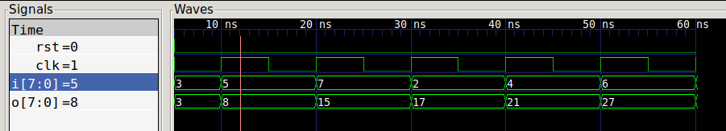
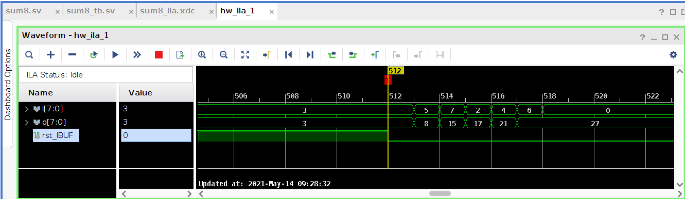
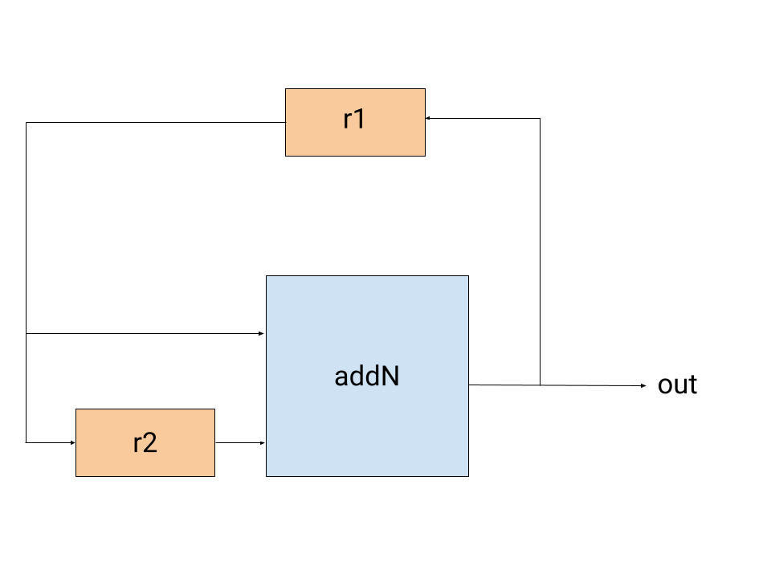

Welcome! This is a quick primer for designing circuits with the Cava DSL. This tutorial will not explain Coq syntax in depth, but will use the same few patterns throughout; you shouldn't need to be a Coq expert to follow along. We'll walk through a few small examples end-to-end, showing you how to define, simulate, and generate netlists for circuits in Cava.
This page (thanks to the Alectryon system) allows you to see the Coq output for each line that has output. Try hovering over the following line (if on mobile, tap the line):
See the banner at the top of the page for instructions on how to navigate the proofs.
Table of Contents
If you are viewing this tutorial on the web and just trying to get a general idea of how Cava works, skip to the next section. If you are trying to write your own circuits or step through this tutorial locally, here are the quick-start instructions for installing Cava:
$ git clone https://github.com/project-oak/silveroak.git $ cd silveroak $ make update-third_party $ make -j4 cava-coq
You can now make the Cava libraries visible to your project by adding the following lines to your project's _CoqProject file:
-R path/to/silveroak/cava/Cava Cava -R path/to/silveroak/third_party/coq-ext-lib/theories ExtLib -R path/to/silveroak/third_party/bedrock2/deps/coqutil/src/coqutil coqutil
If you don't have an existing project, you can set up a minimal one as follows:
The following lines import everything you need to define and simulate circuits, as well as some convenience notations:
Require Import Cava.Cava. Import Circuit.Notations.
If you also want to do proofs about circuits, you'll need this import also:
Require Import Cava.CavaProperties.To start, let's define a 1-bit inverter.
Definition inverter
{signal : SignalType -> Type}
{semantics : Cava signal}
: Circuit (signal Bit) (signal Bit) :=
Comb inv.A few things to notice here:
Normally, we'd write circuit definitions a little more concisely by writing them inside a Section that contains signal and semantics as context variables, like this:
Section WithCava. Context {signal} {semantics : Cava signal}. Definition inverter_concise : Circuit (signal Bit) (signal Bit) := Comb inv.
For the rest of the circuit definitions in this tutorial, you can assume that we're inside the section and that every definition is parameterized over the signal and semantics context variables.
Back to our inverter. Let's take a closer look at the inv primitive.
You can see in the type signature signal Bit -> cava (signal Bit) that inv is defined as a pure Coq function in terms of a monad called cava. The cava monad, like inv, is provided by semantics. The monad is used to capture sharing; it's semantically different in Cava to write:
x <- inv zero ;; y <- inv zero ;; xor2 x y
than it is to write:
x <- inv zero ;; xor2 x x
Both expressions have the same meaning, and if we were using Gallina let binders there would be no difference. But the generated circuit can use two wires for the first definition, and fork the same wire in the second. As circuit diagrams, this is the difference between:
+-----+ +-----+
0 -----| inv |------| |
+-----+ | xor |----- out
+-----+ | |
0 -----| inv |------| |
+-----+ +-----+
and:
+-----+
+---| |
| | xor |---- out
+-----+ | | |
0 -----| inv |----+---| |
+-----+ +-----+
This difference isn't significant in determining what the value of out will be, but it can be very useful when trying to exercise fine-grained control over circuit layout and area! At a first approximation, you can think of a monadic bind (_ <- _ ;; ...) as naming a wire in the circuit graph.
If the monad notations are unfamiliar, the reference has more information on those.
We could have represented sharing by describing circuit graphs with a list of nodes and edges. However, this is essentially the "machine code" of structural hardware descriptions, and is far too tedious a representation for humans to work with. The monadic-function abstraction allows human engineers to think about the functional behavior and composition of circuits at a more intuitive level.
Parameterizing over the cava monad and primitive implementations allows us to use different instances of Cava to interpret the same circuit definition in different ways. One Cava instance generates netlists by adding and connecting wires in the background using a state monad. For circuit simulations and proofs of functional correctness, on the other hand, we don't care about sharing at all; these use no-op identity monad that acts the same as a let binder.
Let's use our inverter definition to see these two interpretations in action.
First, let's generate a netlist. We need to define an interface that describes the circuit's input and output ports and behavior relative to the (global) clock and reset signals. Then we can compute a netlist (type CavaState), which describes the full layout of the circuit in a way that can be easily translated to SystemVerilog.
(* netlist-generating semantics *) Existing Instance CavaCombinationalNet. Definition inverter_interface := sequentialInterface "inverter_interface" "clk" PositiveEdge "rst" PositiveEdge [mkPort "i" Bit] [mkPort "o" Bit].(* A closer look at the circuit body *)
You may notice that we're using something called sequentialInterface here, and referring to clock and reset signals, even though our inverter is a purely combinational circuit. We introduce timing in the netlist interface here in order to drive the circuit with multiple inputs over time, and to plug it in as a subcomponent of circuits that are not combinational.
Now, let's simulate the circuit, which can be useful for testing and proving functional correctness. Here, we use the identity-monad interpretation. The signal for this Cava instance is combType, which interprets a Bit simply as a Coq bool. If we provide the three inputs [true; false; true] to the circuit simulation function simulate, we'll get [false; true; false]:
(* identity-monad semantics *) Existing Instance CombinationalSemantics.
We can use the simulation to write proofs about the circuit. For instance, we can prove that inverter obeys a natural Coq specification:
input:list boolsimulate inverter input = map negb input(* inline the circuit definition *)input:list boolsimulate inverter input = map negb input(* simplify simulate to create an expression in terms of Coq lists *)input:list boolsimulate (Comb inv) input = map negb input(* assert that the two List.map functions are equivalent *)input:list boolmap inv input = map negb inputinput:list boolforall a : bool, inv a = negb a(* inline the inv primitive (fun x => ret (negb x)) *)input:list boola:boolinv a = negb a(* simplify the identity monad expressions *)input:list boola:boolret (negb a) = negb areflexivity. Qed.input:list boola:boolnegb a = negb a
We can even prove that composing two inverters is the same as doing nothing. Here, >==> is circuit composition (a Kleisli arrow). The proof structure is pretty similar.
input:list boolsimulate (inverter >==> inverter) input = inputinput:list boolsimulate (inverter >==> inverter) input = inputinput:list boolsimulate (Comb inv >==> Comb inv) input = inputinput:list boolmap inv (map inv input) = inputinput:list boolmap (fun x : combType Bit => inv (inv x)) input = inputinput:list boolforall a : combType Bit, inv (inv a) = ainput:list boola:combType Bitinv (inv a) = ainput:list boola:combType Bitret (negb (ret (negb a))) = aapply Bool.negb_involutive. Qed.input:list boola:combType Bitnegb (negb a) = a
A note about reading Coq proofs: in general, it's more important to understand the lemma statement (the part before Proof) than it is to understand the proof body. The lemma statement shows what is being proven, and the proof body contains an "argument" to Coq that the statement is true.
To summarize, there are three things you can do with Cava circuits:
In the following examples, we'll use this exact same three-part pattern to explore more complex circuits.
Our next example is a circuit that xors two bytes:
Definition xor_byte : Circuit (signal (Vec Bit 8) * signal (Vec Bit 8)) (signal (Vec Bit 8)) := Comb (Vec.map2 xor2).
This circuit maps a 1-bit xor (xor2) over the two input vectors. xor2 is one of the primitives provided by the Cava instance, like inv. Once again, this is a combinational circuit, so we define it by wrapping a monadic function with Comb.
The Vec here is another SignalType, with a slightly more complicated construction than Bit. A Vec Bit 8 is a vector of 8 bits: a byte. Vectors can be formed from any other SignalType, including other vectors; Vec (Vec (Vec Bit 8) 4) 2) is a valid construction representing a two-dimensional array of bytes (equivalently, a three-dimensional array of bits).
The Vec.map2 definition is from Cava's vector library. It's important not to confuse Vec, the SignalType in Cava's type system, with Vector.t, Coq's standard library vector type. In simulation, Vec is translated into Vector.t, so you may see both in the codebase. You can also convert back and forth between Vec and Vector.t using the Cava primitives packV and unpackV. However, Cava's vector library mirrors most of the definitions available for Coq standard library vectors, so it's usually best to use those definitions instead: use Vec.map2 instead of unpackV, Vector.map2, and packV.
To see more definitions from Cava's core library, try taking a look at the Cava reference, which documents its contents.
To generate a netlist for this circuit, we use mostly the same procedure as for the inverter, except that we change the input and output port types to match the circuit's type signature.
Definition xor_byte_interface := sequentialInterface "xor_byte_interface" "clk" PositiveEdge "rst" PositiveEdge [mkPort "v1" (Vec Bit 8); mkPort "v2" (Vec Bit 8)] [mkPort "o" (Vec Bit 8)].
Tuples in the input or output types become lists of ports for the netlist interface, so signal (Vec Bit 8) * signal (Vec Bit 8) becomes [mkPort "v1" (Vec Bit 8); mkPort "v2" (Vec Bit 8)]. The names of the ports ("v1", "v2", and "o") are just for readability and potentially for reference by other netlists; they can be named however you prefer.
We can also, as before, simulate the circuit.
Literal bit vectors are not especially readable, though; it's not immediately clear that this simulation is 7 xor 10 = 13. For simulations with bitvectors, it's often clearer to use natural-number-to-bitvector conversions from the Coq standard library :
Finally, we can prove that the circuit is correct. In this case, we prove that the circuit's behavior matches the BVxor definition from the standard library, specialized to bit-vectors of length 8.
i:list (Vector.t bool 8 * Vector.t bool 8)simulate xor_byte i = map (fun '(v1, v2) => BVxor 8 v1 v2) ii:list (Vector.t bool 8 * Vector.t bool 8)simulate xor_byte i = map (fun '(v1, v2) => BVxor 8 v1 v2) ii:list (Vector.t bool 8 * Vector.t bool 8)simulate (Comb (Vec.map2 xor2)) i = map (fun '(v1, v2) => BVxor 8 v1 v2) ii:list (Vector.t bool 8 * Vector.t bool 8)map (Vec.map2 xor2) i = map (fun '(v1, v2) => BVxor 8 v1 v2) ii:list (Vector.t bool 8 * Vector.t bool 8)a:(Vector.t bool 8 * Vector.t bool 8)%typeVec.map2 xor2 a = (let '(v1, v2) := a in BVxor 8 v1 v2)i:list (Vector.t bool 8 * Vector.t bool 8)a:(Vector.t bool 8 * Vector.t bool 8)%typeVec.map2 xor2 (fst a, snd a) = BVxor 8 (fst a) (snd a)i:list (Vector.t bool 8 * Vector.t bool 8)a:(Vector.t bool 8 * Vector.t bool 8)%typeVec.map2 xor2 (fst a, snd a) = Vector.map2 xorb (fst a) (snd a)i:list (Vector.t bool 8 * Vector.t bool 8)a:(Vector.t bool 8 * Vector.t bool 8)%typeVector.map2 (fun x y : combType Bit => xorb x y) (fst a) (snd a) = Vector.map2 xorb (fst a) (snd a)reflexivity. Qed.i:list (Vector.t bool 8 * Vector.t bool 8)a:(Vector.t bool 8 * Vector.t bool 8)%typeforall a b : combType Bit, xorb a b = xorb a b
Again, no need to focus too much on the body of the proof here; understanding the lemma statement is the most important part. However, one interesting thing to note is that the proof is not computational; we don't analyze the 2^16 possibile inputs separately. In fact, we never destruct the vectors or refer to the length at all, which leads us to our next example.
As it turns out, we can define xor_byte over arbitrary-length bitvectors with very little modification. The circuit is virtually identical, except that it takes a length argument n and all the 8s are replaced with n:
Definition xor_bitvec (n : nat) : Circuit (signal (Vec Bit n) * signal (Vec Bit n)) (signal (Vec Bit n)) := Comb (Vec.map2 xor2).
We can define an interface for this circuit that also takes n as an argument, and then compute a netlist for any number of bits we want.
Definition xor_bitvec_interface {n : nat} := sequentialInterface "xor_bitvec_interface" "clk" PositiveEdge "rst" PositiveEdge [mkPort "v1" (Vec Bit n); mkPort "v2" (Vec Bit n)] [mkPort "o" (Vec Bit n)]. (* Netlist for a 2-bit xor *)(* Netlist for a 100-bit xor! *)
Simulations are the same; just plug in any size.
(* 7 xor 10 = 13 (n=8) (same as xor_byte) *)(* 1 xor 3 = 2 (n=2) *)(* 1000 xor 3 = 1003 (n=10) *)
The correctness proof has is exactly the same as the xor_byte proof, except with n instead of 8; the proof body is completely unchanged.
n:nati:list (Vector.t bool n * Vector.t bool n)simulate (xor_bitvec n) i = map (fun '(v1, v2) => BVxor n v1 v2) in:nati:list (Vector.t bool n * Vector.t bool n)simulate (xor_bitvec n) i = map (fun '(v1, v2) => BVxor n v1 v2) in:nati:list (Vector.t bool n * Vector.t bool n)simulate (Comb (Vec.map2 xor2)) i = map (fun '(v1, v2) => BVxor n v1 v2) in:nati:list (Vector.t bool n * Vector.t bool n)map (Vec.map2 xor2) i = map (fun '(v1, v2) => BVxor n v1 v2) in:nati:list (Vector.t bool n * Vector.t bool n)a:(Vector.t bool n * Vector.t bool n)%typeVec.map2 xor2 a = (let '(v1, v2) := a in BVxor n v1 v2)n:nati:list (Vector.t bool n * Vector.t bool n)a:(Vector.t bool n * Vector.t bool n)%typeVec.map2 xor2 (fst a, snd a) = BVxor n (fst a) (snd a)n:nati:list (Vector.t bool n * Vector.t bool n)a:(Vector.t bool n * Vector.t bool n)%typeVec.map2 xor2 (fst a, snd a) = Vector.map2 xorb (fst a) (snd a)n:nati:list (Vector.t bool n * Vector.t bool n)a:(Vector.t bool n * Vector.t bool n)%typeVector.map2 (fun x y : combType Bit => xorb x y) (fst a) (snd a) = Vector.map2 xorb (fst a) (snd a)reflexivity. Qed.n:nati:list (Vector.t bool n * Vector.t bool n)a:(Vector.t bool n * Vector.t bool n)%typeforall a b : combType Bit, xorb a b = xorb a b
We can also easily prove that, for 8-bit vectors, xor_bitvec is equivalent to xor_byte:
i:list (Vector.t bool 8 * Vector.t bool 8)simulate (xor_bitvec 8) i = simulate xor_byte ireflexivity. Qed.i:list (Vector.t bool 8 * Vector.t bool 8)simulate (xor_bitvec 8) i = simulate xor_byte i
This example demonstrates the advantage of using a proof assistant instead of a more computational method. The xor_bitvec_correct proof checks essentially instantly and holds for all values of n. With one circuit definition, and one proof, you have defined every single length of bit-vector xor you'll ever need. The same principle can apply to more complicated structures as well.
To take the last circuit a step further, let's consider xoring not just two n-length vectors, but an arbitrary number m of n-length vectors!
We could write a definition that chains the xors together one by one:
xor (xor (xor (xor (xor a b) c) d) e f)
However, since there are no data dependencies, the circuit will have better timing properties for possibly large m if it is a tree, e.g.:
xor (xor (xor a b) c) (xor (xor d e) f)
Luckily, Cava's standard library contains a tree combinator for exactly this kind of situation.
Definition xor_tree {n m : nat} : Circuit (signal (Vec (Vec Bit n) m)) (signal (Vec Bit n)) := Comb (tree (Vec.map2 xor2)).
Now, we can just plug in any sequence of same-size vectors and compute the results!
One note for those less familiar with Coq: the curly braces {} around the n and m arguments are standard Coq syntax for "implicit" arguments; Coq will try to guess their values rather than requiring them to be passed explicitly. So we can actually write xor_tree vec instead of e.g. xor_tree 2 3 vec, and Coq will try to infer n and m from the type of vec. If Coq struggles to infer them, we can also plug in these arguments manually by referencing their names, e.g. xor_tree (m:=3) vec.
(* 7 xor 10 = 13 (n=8, m=2)*)(* 1000 xor 3 = 1003 (n=10, m=2) *)(* 1 xor 2 xor 4 xor 8 xor 16 xor 32 xor 64 xor 128 = 255 (n=8, m=8) *)
To prove the xor tree circuit correct, we prove that it's equivalent to a fold_left, which is a native Coq loop. Essentially, this proof says that the circuit, even with the tree structure, is equivalent to just chaining BVxor over the input in order (starting with 0, which is the identity for xor).
n, m:nati:list (Vector.t (Vector.t bool n) m)m <> 0 -> simulate xor_tree i = map (fun vs : Vector.t (Vector.t bool n) m => Vector.fold_left (BVxor n) (N2Bv_sized n 0) vs) in, m:nati:list (Vector.t (Vector.t bool n) m)m <> 0 -> simulate xor_tree i = map (fun vs : Vector.t (Vector.t bool n) m => Vector.fold_left (BVxor n) (N2Bv_sized n 0) vs) in, m:nati:list (Vector.t (Vector.t bool n) m)m <> 0 -> simulate (Comb (tree (Vec.map2 xor2))) i = map (fun vs : Vector.t (Vector.t bool n) m => Vector.fold_left (BVxor n) (N2Bv_sized n 0) vs) in, m:nati:list (Vector.t (Vector.t bool n) m)H:m <> 0simulate (Comb (tree (Vec.map2 xor2))) i = map (fun vs : Vector.t (Vector.t bool n) m => Vector.fold_left (BVxor n) (N2Bv_sized n 0) vs) in, m:nati:list (Vector.t (Vector.t bool n) m)H:m <> 0map (tree (Vec.map2 xor2)) i = map (fun vs : Vector.t (Vector.t bool n) m => Vector.fold_left (BVxor n) (N2Bv_sized n 0) vs) i(* this rewrite produces side conditions; we'll handle them later *)n, m:nati:list (Vector.t (Vector.t bool n) m)H:m <> 0a:Vector.t (Vector.t bool n) mtree (Vec.map2 xor2) a = Vector.fold_left (BVxor n) (N2Bv_sized n 0) an, m:nati:list (Vector.t (Vector.t bool n) m)H:m <> 0a:Vector.t (Vector.t bool n) mVector.fold_left (fun a b : combType (Vec Bit n) => Vec.map2 (fun '(x, y) => xorb x y) (a, b)) (N2Bv_sized n 0) a = Vector.fold_left (BVxor n) (N2Bv_sized n 0) an, m:nati:list (Vector.t (Vector.t bool n) m)H:m <> 0a:Vector.t (Vector.t bool n) ma0:combType (Vec Bit n)Vector.map2 (fun x y : combType Bit => xorb x y) (N2Bv_sized n 0) a0 = a0n, m:nati:list (Vector.t (Vector.t bool n) m)H:m <> 0a:Vector.t (Vector.t bool n) ma0:combType (Vec Bit n)Vector.map2 (fun x y : combType Bit => xorb x y) a0 (N2Bv_sized n 0) = a0n, m:nati:list (Vector.t (Vector.t bool n) m)H:m <> 0a:Vector.t (Vector.t bool n) ma0, b, c:combType (Vec Bit n)Vector.map2 (fun x y : combType Bit => xorb x y) a0 (Vector.map2 (fun x y : combType Bit => xorb x y) b c) = Vector.map2 (fun x y : combType Bit => xorb x y) (Vector.map2 (fun x y : combType Bit => xorb x y) a0 b) cn, m:nati:list (Vector.t (Vector.t bool n) m)H:m <> 0a:Vector.t (Vector.t bool n) mVector.fold_left (fun a b : combType (Vec Bit n) => Vec.map2 (fun '(x, y) => xorb x y) (a, b)) (N2Bv_sized n 0) a = Vector.fold_left (BVxor n) (N2Bv_sized n 0) an, m:nati:list (Vector.t (Vector.t bool n) m)H:m <> 0a:Vector.t (Vector.t bool n) mVector.fold_left (fun a b : combType (Vec Bit n) => Vec.map2 (fun '(x, y) => xorb x y) (a, b)) (N2Bv_sized n 0) a = Vector.fold_left (Vector.map2 xorb) (N2Bv_sized n 0) an, m:nati:list (Vector.t (Vector.t bool n) m)H:m <> 0a:Vector.t (Vector.t bool n) mb:Vector.t bool na0:combType (Vec Bit n)Vector.map2 (fun x y : combType Bit => xorb x y) b a0 = Vector.map2 xorb b a0reflexivity.n, m:nati:list (Vector.t (Vector.t bool n) m)H:m <> 0a:Vector.t (Vector.t bool n) mb:Vector.t bool na0:combType (Vec Bit n)forall a b : combType Bit, xorb a b = xorb a b(* now, solve the tree_equiv side conditions *)n, m:nati:list (Vector.t (Vector.t bool n) m)H:m <> 0a:Vector.t (Vector.t bool n) ma0:combType (Vec Bit n)Vector.map2 (fun x y : combType Bit => xorb x y) (N2Bv_sized n 0) a0 = a0n, m:nati:list (Vector.t (Vector.t bool n) m)H:m <> 0a:Vector.t (Vector.t bool n) ma0:combType (Vec Bit n)Vector.map2 (fun x y : combType Bit => xorb x y) a0 (N2Bv_sized n 0) = a0n, m:nati:list (Vector.t (Vector.t bool n) m)H:m <> 0a:Vector.t (Vector.t bool n) ma0, b, c:combType (Vec Bit n)Vector.map2 (fun x y : combType Bit => xorb x y) a0 (Vector.map2 (fun x y : combType Bit => xorb x y) b c) = Vector.map2 (fun x y : combType Bit => xorb x y) (Vector.map2 (fun x y : combType Bit => xorb x y) a0 b) cn, m:nati:list (Vector.t (Vector.t bool n) m)H:m <> 0a:Vector.t (Vector.t bool n) ma0:combType (Vec Bit n)Vector.map2 (fun x y : combType Bit => xorb x y) (N2Bv_sized n 0) a0 = a0n, m:nati:list (Vector.t (Vector.t bool n) m)H:m <> 0a:Vector.t (Vector.t bool n) ma0:combType (Vec Bit n)Bv2N (Vector.map2 (fun x y : combType Bit => xorb x y) (N2Bv_sized n 0) a0) = Bv2N a0apply N.lxor_0_l.n, m:nati:list (Vector.t (Vector.t bool n) m)H:m <> 0a:Vector.t (Vector.t bool n) ma0:combType (Vec Bit n)N.lxor 0 (Bv2N a0) = Bv2N a0n, m:nati:list (Vector.t (Vector.t bool n) m)H:m <> 0a:Vector.t (Vector.t bool n) ma0:combType (Vec Bit n)Vector.map2 (fun x y : combType Bit => xorb x y) a0 (N2Bv_sized n 0) = a0n, m:nati:list (Vector.t (Vector.t bool n) m)H:m <> 0a:Vector.t (Vector.t bool n) ma0, b, c:combType (Vec Bit n)Vector.map2 (fun x y : combType Bit => xorb x y) a0 (Vector.map2 (fun x y : combType Bit => xorb x y) b c) = Vector.map2 (fun x y : combType Bit => xorb x y) (Vector.map2 (fun x y : combType Bit => xorb x y) a0 b) cn, m:nati:list (Vector.t (Vector.t bool n) m)H:m <> 0a:Vector.t (Vector.t bool n) ma0:combType (Vec Bit n)Vector.map2 (fun x y : combType Bit => xorb x y) a0 (N2Bv_sized n 0) = a0n, m:nati:list (Vector.t (Vector.t bool n) m)H:m <> 0a:Vector.t (Vector.t bool n) ma0:combType (Vec Bit n)Bv2N (Vector.map2 (fun x y : combType Bit => xorb x y) a0 (N2Bv_sized n 0)) = Bv2N a0apply N.lxor_0_r.n, m:nati:list (Vector.t (Vector.t bool n) m)H:m <> 0a:Vector.t (Vector.t bool n) ma0:combType (Vec Bit n)N.lxor (Bv2N a0) 0 = Bv2N a0n, m:nati:list (Vector.t (Vector.t bool n) m)H:m <> 0a:Vector.t (Vector.t bool n) ma0, b, c:combType (Vec Bit n)Vector.map2 (fun x y : combType Bit => xorb x y) a0 (Vector.map2 (fun x y : combType Bit => xorb x y) b c) = Vector.map2 (fun x y : combType Bit => xorb x y) (Vector.map2 (fun x y : combType Bit => xorb x y) a0 b) cn, m:nati:list (Vector.t (Vector.t bool n) m)H:m <> 0a:Vector.t (Vector.t bool n) ma0, b, c:combType (Vec Bit n)Vector.map2 (fun x y : combType Bit => xorb x y) a0 (Vector.map2 (fun x y : combType Bit => xorb x y) b c) = Vector.map2 (fun x y : combType Bit => xorb x y) (Vector.map2 (fun x y : combType Bit => xorb x y) a0 b) cn, m:nati:list (Vector.t (Vector.t bool n) m)H:m <> 0a:Vector.t (Vector.t bool n) ma0, b, c:combType (Vec Bit n)Bv2N (Vector.map2 (fun x y : combType Bit => xorb x y) a0 (Vector.map2 (fun x y : combType Bit => xorb x y) b c)) = Bv2N (Vector.map2 (fun x y : combType Bit => xorb x y) (Vector.map2 (fun x y : combType Bit => xorb x y) a0 b) c)n, m:nati:list (Vector.t (Vector.t bool n) m)H:m <> 0a:Vector.t (Vector.t bool n) ma0, b, c:combType (Vec Bit n)N.lxor (Bv2N a0) (N.lxor (Bv2N b) (Bv2N c)) = N.lxor (N.lxor (Bv2N a0) (Bv2N b)) (Bv2N c)n, m:nati:list (Vector.t (Vector.t bool n) m)H:m <> 0a:Vector.t (Vector.t bool n) ma0, b, c:combType (Vec Bit n)N.lxor (N.lxor (Bv2N a0) (Bv2N b)) (Bv2N c) = N.lxor (Bv2N a0) (N.lxor (Bv2N b) (Bv2N c))apply N.lxor_assoc. } Qed.n, m:nati:list (Vector.t (Vector.t bool n) m)H:m <> 0a:Vector.t (Vector.t bool n) ma0, b, c:combType (Vec Bit n)N.lxor (N.lxor (Bv2N a0) (Bv2N b)) (Bv2N c) = N.lxor (Bv2N a0) (N.lxor (Bv2N b) (Bv2N c))
It's worth taking a moment here again to point out just how broad the proof of correctness is. This proof applies to a circuit that xors two bits, and also applies to a circuit that xors 1000 1000-bit bitvectors.
As a final touch, we can also prove that, when applied to just two bitvectors (m = 2), xor_tree is equivalent to xor_bitvec:
n:nati:list (Vector.t bool n * Vector.t bool n)simulate (xor_bitvec n) i = simulate xor_tree (map (fun '(v1, v2) => [v1; v2]) i)n:nati:list (Vector.t bool n * Vector.t bool n)simulate (xor_bitvec n) i = simulate xor_tree (map (fun '(v1, v2) => [v1; v2]) i)n:nati:list (Vector.t bool n * Vector.t bool n)map (Vec.map2 xor2) i = map (tree (Vec.map2 xor2)) (map (fun '(v1, v2) => [v1; v2]) i)n:nati:list (Vector.t bool n * Vector.t bool n)map (Vec.map2 xor2) i = map (fun x : Vector.t bool n * Vector.t bool n => tree (Vec.map2 xor2) (let '(v1, v2) := x in [v1; v2])) in:nati:list (Vector.t bool n * Vector.t bool n)a:(Vector.t bool n * Vector.t bool n)%typeVec.map2 xor2 a = tree (Vec.map2 xor2) (let '(v1, v2) := a in [v1; v2])(* The tree lemma produces the same side conditions as before, but we solve them here in a more concise way *)n:nati:list (Vector.t bool n * Vector.t bool n)a:(Vector.t bool n * Vector.t bool n)%typeVec.map2 xor2 (fst a, snd a) = tree (Vec.map2 xor2) [fst a; snd a]n:nati:list (Vector.t bool n * Vector.t bool n)a:(Vector.t bool n * Vector.t bool n)%typeVec.map2 xor2 (fst a, snd a) = Vector.fold_left (fun a b : combType (Vec Bit n) => Vec.map2 xor2 (a, b)) (N2Bv_sized n 0) [fst a; snd a]n:nati:list (Vector.t bool n * Vector.t bool n)a:(Vector.t bool n * Vector.t bool n)%typeVec.map2 xor2 (fst a, snd a) = Vec.map2 xor2 (Vec.map2 xor2 (N2Bv_sized n 0, fst a), snd a)n:nati:list (Vector.t bool n * Vector.t bool n)a:(Vector.t bool n * Vector.t bool n)%typeVector.map2 (fun x y : combType Bit => xorb x y) (fst a) (snd a) = Vector.map2 (fun x y : combType Bit => xorb x y) (Vector.map2 (fun x y : combType Bit => xorb x y) (N2Bv_sized n 0) (fst a)) (snd a)n:nati:list (Vector.t bool n * Vector.t bool n)a:(Vector.t bool n * Vector.t bool n)%typeBv2N (Vector.map2 (fun x y : combType Bit => xorb x y) (fst a) (snd a)) = Bv2N (Vector.map2 (fun x y : combType Bit => xorb x y) (Vector.map2 (fun x y : combType Bit => xorb x y) (N2Bv_sized n 0) (fst a)) (snd a))n:nati:list (Vector.t bool n * Vector.t bool n)a:(Vector.t bool n * Vector.t bool n)%typeN.lxor (Bv2N (fst a)) (Bv2N (snd a)) = N.lxor (N.lxor 0 (Bv2N (fst a))) (Bv2N (snd a))reflexivity. Qed.n:nati:list (Vector.t bool n * Vector.t bool n)a:(Vector.t bool n * Vector.t bool n)%typeN.lxor (Bv2N (fst a)) (Bv2N (snd a)) = N.lxor (Bv2N (fst a)) (Bv2N (snd a))
At this point, we've covered pretty much everything you need to start building combinational circuits in Cava -- circuits that don't have any timing-dependent elements like loops or registers. In the next example, we'll show how to build sequential circuits.
The simplest sequential element is a unit delay (register). The delay takes in a value at the end of the clock cycle, and then outputs the same value at the start of the next clock cycle. So if we want to write a circuit that delays the input stream by three timesteps, we can write three delays in a row:
Definition three_delays {t : SignalType} : Circuit (signal t) (signal t) := Delay >==> Delay >==> Delay.
Note that this circuit definition will delay a signal of any type. The t argument can be anything, although to generate a concrete netlist or simulation it will need to be plugged in. We'll do simulations and netlist generations with a few different types.
The >==> notation means "compose these circuits", i.e connect the output ports of the left-hand circuit to the input ports of the second. It's short for Compose, which can also be used directly.
(* Exactly the same thing as three_delays, just without notation *) Definition three_delays_verbose {t : SignalType} : Circuit (signal t) (signal t) := Compose (Compose Delay Delay) Delay.
Compose and Delay are like Comb; they are definitions that create Circuits. You can find a full list of Circuit constructors in the reference.
Here's the netlist for three_delays, generated for two different signal types:
Definition three_delays_interface {t : SignalType} := sequentialInterface "three_delays_interface" "clk" PositiveEdge "rst" PositiveEdge [mkPort "i" t] [mkPort "o" t]. (* delay a stream of bits *)(* delay a stream of bytes *)
Let's simulate the circuit, first using a sequence of 1s:
You can see that we get three false outputs before getting the stream of true values. The initial state of Delay is always "zeroed out"; for a custom initial state, you can use the alternative constructor DelayInit, which takes an initial value.
We can also simulate the circuit with bytes. To make the simulations a little more interesting, we'll use a small convenience definition that creates a list of bytes counting up in sequence.
(* convenience definition for a sequence of numbers as bytes *) Definition byte_seq start len : list (combType (Vec Bit 8)) := map (nat_to_bitvec_sized 8) (seq start len).
Now, when we run the simulations, it's easier to follow the timesteps:
We can also compose three_delays with itself to get six delays:
Finally, the correctness proof for three_delays says that it prepends three defaultSignal values (the generic name for "a zeroed-out value of the correct signal type") to the input, then truncates the new list to the length of the original input.
t:SignalTypeinput:list (combType t)simulate three_delays input = firstn (Datatypes.length input) (defaultSignal :: defaultSignal :: defaultSignal :: input)t:SignalTypeinput:list (combType t)simulate three_delays input = firstn (Datatypes.length input) (defaultSignal :: defaultSignal :: defaultSignal :: input)t:SignalTypeinput:list (combType t)firstn (Datatypes.length (firstn (Datatypes.length (firstn (Datatypes.length input) (defaultSignal :: input))) (defaultSignal :: firstn (Datatypes.length input) (defaultSignal :: input)))) (defaultSignal :: firstn (Datatypes.length (firstn (Datatypes.length input) (defaultSignal :: input))) (defaultSignal :: firstn (Datatypes.length input) (defaultSignal :: input))) = firstn (Datatypes.length input) (defaultSignal :: defaultSignal :: defaultSignal :: input)t:SignalTypeinput:list (combType t)firstn (Datatypes.length input) (defaultSignal :: firstn (Datatypes.length input) (defaultSignal :: firstn (Datatypes.length input) (defaultSignal :: input))) = firstn (Datatypes.length input) (defaultSignal :: defaultSignal :: defaultSignal :: input)t:SignalTypeinput:list (combType t)firstn (Datatypes.length input) (firstn (S (Datatypes.length input)) (firstn (S (S (Datatypes.length input))) (defaultSignal :: defaultSignal :: defaultSignal :: input))) = firstn (Datatypes.length input) (defaultSignal :: defaultSignal :: defaultSignal :: input)t:SignalTypeinput:list (combType t)firstn (Init.Nat.min (Init.Nat.min (Datatypes.length input) (S (Datatypes.length input))) (S (S (Datatypes.length input)))) (defaultSignal :: defaultSignal :: defaultSignal :: input) = firstn (Datatypes.length input) (defaultSignal :: defaultSignal :: defaultSignal :: input)reflexivity. Qed.t:SignalTypeinput:list (combType t)firstn (Datatypes.length input) (defaultSignal :: defaultSignal :: defaultSignal :: input) = firstn (Datatypes.length input) (defaultSignal :: defaultSignal :: defaultSignal :: input)
This example will introduce Loop, a circuit constructor that connects the output port of a circuit to its own input port with a delay in the middle. This creates internal state values, which can be referenced from inside the loop but are not visible outside it. Visually, a loop looks like this:
The following circuit gets a stream of bit-vectors as input, and uses Loop to provides the rolling sum as output:
Definition sum {n : nat} : Circuit (signal (Vec Bit n)) (signal (Vec Bit n)) := Loop (* The combinational circuit that makes up the loop body *) (Comb (fun '(input, state) => sum <- addN (input, state) ;; (* return output and new state (the same in our case) *) ret (sum, sum))).
The body of this loop is a combinational circuit whose input is the loop input signal and the internal state, and whose output is the loop output signal and the new state.
As discussed in the very first example, the _ <- _ ;; _ notation is a monadic bind; it's like a let binder or variable assignment, except that it helps Cava track resource sharing. ret means "return". You can read in much more detail about monad notations in the reference.
For the purposes of the tutorial, we'll introduce just one more monad notation: monad composition, represented by >=>. Assuming f and g are monadic functions, writing f >=> g is the same as writing fun x => y <- f x ;; g y. This is very similar to the notation for Compose (>==>) shown earlier, except that it works for the bodies of combinational circuits rather than for sequential circuits.
Using >=>, we can rewrite sum as:
(* Means exactly the same thing as sum *) Definition sum_concise {n : nat} : Circuit (signal (Vec Bit n)) (signal (Vec Bit n)) := Loop (Comb (addN >=> fork2)).
The fork2 combinator simply duplicates its input (like a fork in a wire).
As written, the sum and sum_concise circuits will start with an initial state of zero (or defaultSignal). If we want to pull in a specific initial value, we can use LoopInit instead and plug in a compile-time constant:
Definition sum_init {n : nat} (init : combType (Vec Bit n)) := LoopInit init (Comb (addN >=> fork2)).
Here's the netlist for sum. You can see that no "loop" appears in the final version, just a delay connecting the loop's output to its own input.
Definition sum_interface {n : nat} := sequentialInterface "sum8" "clk" PositiveEdge "rst" PositiveEdge [mkPort "i" (Vec Bit n)] [mkPort "o" (Vec Bit n)].Local Open Scope N_scope. Definition sum8Netlist := makeCircuitNetlist (sum_interface (n := 8)) sum. Definition sum8_tb_inputs := map (N2Bv_sized 8) [3; 5; 7; 2; 4; 6]. Definition sum8_tb_expected_outputs := (simulate sum sum8_tb_inputs). Definition sum8_tb := testBench "sum8_tb" (sum_interface (n := 8)) sum8_tb_inputs sum8_tb_expected_outputs.
The circuit netlist and testbench can be converted in SystemVerilog and simulated using a SystemVerilog simulator like Verilator:
clang++ -L/usr/local/opt/sqlite/lib sum8_tb.o verilated.o verilated_vcd_c.o Vsum8_tb__ALL.a -o Vsum8_tb -lm -lstdc++ obj_dir/Vsum8_tb
10: tick = 0, i = 3, o = 3
20: tick = 1, i = 5, o = 8
30: tick = 2, i = 7, o = 15
40: tick = 3, i = 2, o = 17
50: tick = 4, i = 4, o = 21
60: tick = 5, i = 6, o = 27
which produces the expected results that were predicted by the model in Coq. The testbench generates a VCD waveform that we can use to observe graphically using a VCD waveform viewer like gtkwave:
We can also synthesize a version of this testbench and the sum8 circuit into gates using the Xilinx Vivado FPGA tools to produce a bitstream that can be usd to program an FPGA chip. We can hook up this circuit with another circuit that acts as a logic analyzer (ILA) then then run and observe this actually running on an FPGA and capture its output:
Reassuringly, the actual circuit behaves as predicted by the Cava model in Coq and the SystemVerilog simulation.
Local Close Scope N_scope.The netlist for sum_init can use the same interface, but needs an extra argument for the initial value:
Let's run a few simulations to see the circuit in action:
(* sum of 10 1s = 1,2,3,...10 *)(* sum of 1..10 = 1, 3, 6, 10, 15, 21, 28, 36, 45, 55 *)(* sum of 10 1s starting at 10 = 11,12,13,...20 *)
To write a correctness proof for sum, we first need to describe its behavior. There are many ways to do this, but one way is shown below.
(* computes the sum of a list of numbers (as a single number, not the rolling sum) *) Definition sum_list_N (input : list N) : N := fold_left N.add input 0%N. (* computes the *rolling* sum; the nth element of the output represents the sum of the input up to index n *) Definition rolling_sum (input : list N) : list N := map (fun i => sum_list_N (firstn (S i) input)) (seq 0 (length input)). (* example to show the behavior of rolling_sum *)(* specification for the sum circuit : convert to N, get rolling_sum, convert back to bit-vectors *) Definition spec_of_sum {n} (input : list (combType (Vec Bit n))) : list (combType (Vec Bit n)) := map (N2Bv_sized n) (rolling_sum (map Bv2N input)).
To reason about loops, we can use loop-invariant lemmas like this one:
To use the loop-invariant lemma, though, we need to figure out what the invariant of sum should be. The invariant of a loop takes four arguments: the timestep (a nat), the current loop state (i.e. the value held by the delay at this timestep), the state of the loop-body circuit, and the output accumulator (a list of the outputs generated so far). Because the sum circuit has a purely combinational body, it has no internal state, so the body state in our case is just Coq's unit type. Here's the invariant statement:
Definition sum_invariant {n} (input : list (combType (Vec Bit n)))
(t : nat)
(loop_state : combType (Vec Bit n))
(body_circuit_state : unit)
(output_accumulator : list (combType (Vec Bit n))) : Prop :=
(* at timestep t... *)
(* ...the loop state holds the sum of the inputs so far (that is,
the first t inputs) *)
loop_state = N2Bv_sized n (sum_list_N (map Bv2N (firstn t input)))
(* ... and the output accumulator matches the rolling-sum spec
applied to the inputs so far *)
/\ output_accumulator = spec_of_sum (firstn t input).Now, we can use the invariant to prove a correctness lemma. This proof could certainly be a little more elegant and automated, but the steps are left explicit here for those who are curious to follow the reasoning in detail.
(* This lemma is helpful for sum_correct *)n:natl:list Nv:Vector.t bool nN2Bv_sized n (sum_list_N (l ++ [Bv2N v])) = N2Bv_sized n (Bv2N v + Bv2N (N2Bv_sized n (sum_list_N l)))n:natl:list Nv:Vector.t bool nN2Bv_sized n (sum_list_N (l ++ [Bv2N v])) = N2Bv_sized n (Bv2N v + Bv2N (N2Bv_sized n (sum_list_N l)))n:natl:list Nv:Vector.t bool nN2Bv_sized n (fold_left N.add (l ++ [Bv2N v]) 0%N) = N2Bv_sized n (Bv2N v + Bv2N (N2Bv_sized n (fold_left N.add l 0%N)))(* use Bv2N to bring the goal into the N realm, where it's easier to solve using modular arithmetic rules *)n:natl:list Nv:Vector.t bool nN2Bv_sized n (fold_left N.add l 0%N + Bv2N v) = N2Bv_sized n (Bv2N v + Bv2N (N2Bv_sized n (fold_left N.add l 0%N)))n:natl:list Nv:Vector.t bool n((fold_left N.add l 0 + Bv2N v) mod 2 ^ N.of_nat n)%N = ((Bv2N v + fold_left N.add l 0 mod 2 ^ N.of_nat n) mod 2 ^ N.of_nat n)%Nn:natl:list Nv:Vector.t bool n((fold_left N.add l 0 + Bv2N v) mod 2 ^ N.of_nat n)%N = ((Bv2N v + fold_left N.add l 0) mod 2 ^ N.of_nat n)%Nreflexivity. Qed. (* Correctness lemma for sum *)n:natl:list Nv:Vector.t bool n((Bv2N v + fold_left N.add l 0) mod 2 ^ N.of_nat n)%N = ((Bv2N v + fold_left N.add l 0) mod 2 ^ N.of_nat n)%Nn:natinput:list (combType (Vec Bit n))simulate sum input = spec_of_sum inputn:natinput:list (combType (Vec Bit n))simulate sum input = spec_of_sum input(* apply loop invariant lemma using sum_invariant; generates three side conditions *)n:natinput:list (combType (Vec Bit n))simulate (Loop (Comb (fun '(input, state) => sum <- addN (input, state);; ret (sum, sum)))) input = spec_of_sum inputn:natinput:list (combType (Vec Bit n))sum_invariant input 0 (defaultCombValue (Vec Bit n)) (reset_state (Comb (fun '(input, state) => sum <- addN (input, state);; ret (sum, sum)))) []n:natinput:list (combType (Vec Bit n))forall (t : nat) (acc : list (combType (Vec Bit n))) (st : combType (Vec Bit n)) (bodyst : circuit_state (Comb (fun '(input, state) => sum <- addN (input, state);; ret (sum, sum)))) (d : combType (Vec Bit n)), sum_invariant input t st bodyst acc -> 0 <= t < Datatypes.length input -> let out_st'_bodyst' := step (Comb (fun '(input, state) => sum <- addN (input, state);; ret (sum, sum))) bodyst (nth t input d, st) in let out := fst (fst out_st'_bodyst') in let st' := snd (fst out_st'_bodyst') in let bodyst' := snd out_st'_bodyst' in sum_invariant input (S t) st' bodyst' (acc ++ [out])n:natinput:list (combType (Vec Bit n))forall (acc : list (combType (Vec Bit n))) (st : combType (Vec Bit n)) (bodyst : circuit_state (Comb (fun '(input, state) => sum <- addN (input, state);; ret (sum, sum)))), sum_invariant input (Datatypes.length input) st bodyst acc -> acc = spec_of_sum inputn:natinput:list (combType (Vec Bit n))sum_invariant input 0 (defaultCombValue (Vec Bit n)) (reset_state (Comb (fun '(input, state) => sum <- addN (input, state);; ret (sum, sum)))) []n:natinput:list (combType (Vec Bit n))defaultCombValue (Vec Bit n) = N2Bv_sized n (sum_list_N (map Bv2N (firstn 0 input))) /\ [] = spec_of_sum (firstn 0 input)split; reflexivity.n:natinput:list (combType (Vec Bit n))Vector.const false n = Bvect_false n /\ [] = []n:natinput:list (combType (Vec Bit n))forall (t : nat) (acc : list (combType (Vec Bit n))) (st : combType (Vec Bit n)) (bodyst : circuit_state (Comb (fun '(input, state) => sum <- addN (input, state);; ret (sum, sum)))) (d : combType (Vec Bit n)), sum_invariant input t st bodyst acc -> 0 <= t < Datatypes.length input -> let out_st'_bodyst' := step (Comb (fun '(input, state) => sum <- addN (input, state);; ret (sum, sum))) bodyst (nth t input d, st) in let out := fst (fst out_st'_bodyst') in let st' := snd (fst out_st'_bodyst') in let bodyst' := snd out_st'_bodyst' in sum_invariant input (S t) st' bodyst' (acc ++ [out])n:natinput:list (combType (Vec Bit n))forall (acc : list (combType (Vec Bit n))) (st : combType (Vec Bit n)) (bodyst : circuit_state (Comb (fun '(input, state) => sum <- addN (input, state);; ret (sum, sum)))), sum_invariant input (Datatypes.length input) st bodyst acc -> acc = spec_of_sum input(* prove that, if the invariant holds at the beginning of the loop body for timestep t, it holds at the end of the loop body for timestep t + 1 *)n:natinput:list (combType (Vec Bit n))forall (t : nat) (acc : list (combType (Vec Bit n))) (st : combType (Vec Bit n)) (bodyst : circuit_state (Comb (fun '(input, state) => sum <- addN (input, state);; ret (sum, sum)))) (d : combType (Vec Bit n)), sum_invariant input t st bodyst acc -> 0 <= t < Datatypes.length input -> let out_st'_bodyst' := step (Comb (fun '(input, state) => sum <- addN (input, state);; ret (sum, sum))) bodyst (nth t input d, st) in let out := fst (fst out_st'_bodyst') in let st' := snd (fst out_st'_bodyst') in let bodyst' := snd out_st'_bodyst' in sum_invariant input (S t) st' bodyst' (acc ++ [out])n:natinput:list (combType (Vec Bit n))forall (t : nat) (acc : list (combType (Vec Bit n))) (st : combType (Vec Bit n)), circuit_state (Comb (fun '(input, state) => sum <- addN (input, state);; ret (sum, sum))) -> forall d : combType (Vec Bit n), st = N2Bv_sized n (sum_list_N (map Bv2N (firstn t input))) /\ acc = spec_of_sum (firstn t input) -> 0 <= t < Datatypes.length input -> snd (fst (sum <- addN (nth t input d, st);; ret (sum, sum), tt)) = N2Bv_sized n (sum_list_N (map Bv2N (firstn (S t) input))) /\ acc ++ [fst (fst (sum <- addN (nth t input d, st);; ret (sum, sum), tt))] = spec_of_sum (firstn (S t) input)n:natinput:list (combType (Vec Bit n))t:natacc:list (combType (Vec Bit n))st:combType (Vec Bit n)bodyst:circuit_state (Comb (fun '(input, state) => sum <- addN (input, state);; ret (sum, sum)))d:combType (Vec Bit n)H:st = N2Bv_sized n (sum_list_N (map Bv2N (firstn t input))) /\ acc = spec_of_sum (firstn t input)H0:0 <= t < Datatypes.length inputsnd (fst (sum <- addN (nth t input d, st);; ret (sum, sum), tt)) = N2Bv_sized n (sum_list_N (map Bv2N (firstn (S t) input))) /\ acc ++ [fst (fst (sum <- addN (nth t input d, st);; ret (sum, sum), tt))] = spec_of_sum (firstn (S t) input)n:natinput:list (combType (Vec Bit n))t:natacc:list (combType (Vec Bit n))st:combType (Vec Bit n)bodyst:circuit_state (Comb (fun '(input, state) => sum <- addN (input, state);; ret (sum, sum)))d:combType (Vec Bit n)H:st = N2Bv_sized n (sum_list_N (map Bv2N (firstn t input))) /\ acc = spec_of_sum (firstn t input)H0:0 <= t < Datatypes.length inputN2Bv_sized n (Bv2N (nth t input d) + Bv2N st) = N2Bv_sized n (sum_list_N (map Bv2N (firstn (S t) input))) /\ acc ++ [N2Bv_sized n (Bv2N (nth t input d) + Bv2N st)] = spec_of_sum (firstn (S t) input)n:natinput:list (combType (Vec Bit n))t:natbodyst:circuit_state (Comb (fun '(input, state) => sum <- addN (input, state);; ret (sum, sum)))d:combType (Vec Bit n)H0:0 <= tH1:t < Datatypes.length inputN2Bv_sized n (Bv2N (nth t input d) + Bv2N (N2Bv_sized n (sum_list_N (map Bv2N (firstn t input))))) = N2Bv_sized n (sum_list_N (map Bv2N (firstn (S t) input))) /\ spec_of_sum (firstn t input) ++ [N2Bv_sized n (Bv2N (nth t input d) + Bv2N (N2Bv_sized n (sum_list_N (map Bv2N (firstn t input)))))] = spec_of_sum (firstn (S t) input)n:natinput:list (combType (Vec Bit n))t:natbodyst:circuit_state (Comb (fun '(input, state) => sum <- addN (input, state);; ret (sum, sum)))d:combType (Vec Bit n)H0:0 <= tH1:t < Datatypes.length inputN2Bv_sized n (Bv2N (nth t input d) + Bv2N (N2Bv_sized n (sum_list_N (map Bv2N (firstn t input))))) = N2Bv_sized n (sum_list_N (map Bv2N (firstn (S t) input)))n:natinput:list (combType (Vec Bit n))t:natbodyst:circuit_state (Comb (fun '(input, state) => sum <- addN (input, state);; ret (sum, sum)))d:combType (Vec Bit n)H0:0 <= tH1:t < Datatypes.length inputspec_of_sum (firstn t input) ++ [N2Bv_sized n (Bv2N (nth t input d) + Bv2N (N2Bv_sized n (sum_list_N (map Bv2N (firstn t input)))))] = spec_of_sum (firstn (S t) input)n:natinput:list (combType (Vec Bit n))t:natbodyst:circuit_state (Comb (fun '(input, state) => sum <- addN (input, state);; ret (sum, sum)))d:combType (Vec Bit n)H0:0 <= tH1:t < Datatypes.length inputN2Bv_sized n (Bv2N (nth t input d) + Bv2N (N2Bv_sized n (sum_list_N (map Bv2N (firstn t input))))) = N2Bv_sized n (sum_list_N (map Bv2N (firstn (S t) input)))n:natinput:list (combType (Vec Bit n))t:natbodyst:circuit_state (Comb (fun '(input, state) => sum <- addN (input, state);; ret (sum, sum)))d:combType (Vec Bit n)H0:0 <= tH1:t < Datatypes.length inputN2Bv_sized n (Bv2N (nth t input d) + Bv2N (N2Bv_sized n (sum_list_N (map Bv2N (firstn t input))))) = N2Bv_sized n (sum_list_N (map Bv2N (firstn t input ++ [nth t input d])))n:natinput:list (combType (Vec Bit n))t:natbodyst:circuit_state (Comb (fun '(input, state) => sum <- addN (input, state);; ret (sum, sum)))d:combType (Vec Bit n)H0:0 <= tH1:t < Datatypes.length inputN2Bv_sized n (Bv2N (nth t input d) + Bv2N (N2Bv_sized n (sum_list_N (map Bv2N (firstn t input))))) = N2Bv_sized n (sum_list_N (map Bv2N (firstn t input) ++ [Bv2N (nth t input d)]))reflexivity.n:natinput:list (combType (Vec Bit n))t:natbodyst:circuit_state (Comb (fun '(input, state) => sum <- addN (input, state);; ret (sum, sum)))d:combType (Vec Bit n)H0:0 <= tH1:t < Datatypes.length inputN2Bv_sized n (Bv2N (nth t input d) + Bv2N (N2Bv_sized n (sum_list_N (map Bv2N (firstn t input))))) = N2Bv_sized n (Bv2N (nth t input d) + Bv2N (N2Bv_sized n (sum_list_N (map Bv2N (firstn t input)))))n:natinput:list (combType (Vec Bit n))t:natbodyst:circuit_state (Comb (fun '(input, state) => sum <- addN (input, state);; ret (sum, sum)))d:combType (Vec Bit n)H0:0 <= tH1:t < Datatypes.length inputspec_of_sum (firstn t input) ++ [N2Bv_sized n (Bv2N (nth t input d) + Bv2N (N2Bv_sized n (sum_list_N (map Bv2N (firstn t input)))))] = spec_of_sum (firstn (S t) input)n:natinput:list (combType (Vec Bit n))t:natbodyst:circuit_state (Comb (fun '(input, state) => sum <- addN (input, state);; ret (sum, sum)))d:combType (Vec Bit n)H0:0 <= tH1:t < Datatypes.length inputspec_of_sum (firstn t input) ++ [N2Bv_sized n (Bv2N (nth t input d) + Bv2N (N2Bv_sized n (sum_list_N (map Bv2N (firstn t input)))))] = spec_of_sum (firstn (S t) input)(* simplify expression using list lemmas *)n:natinput:list (combType (Vec Bit n))t:natbodyst:circuit_state (Comb (fun '(input, state) => sum <- addN (input, state);; ret (sum, sum)))d:combType (Vec Bit n)H0:0 <= tH1:t < Datatypes.length inputmap (N2Bv_sized n) (map (fun i : nat => sum_list_N (firstn (S i) (map Bv2N (firstn t input)))) (seq 0 (Datatypes.length (map Bv2N (firstn t input))))) ++ [N2Bv_sized n (Bv2N (nth t input d) + Bv2N (N2Bv_sized n (sum_list_N (map Bv2N (firstn t input)))))] = map (N2Bv_sized n) (map (fun i : nat => sum_list_N (firstn (S i) (map Bv2N (firstn (S t) input)))) (seq 0 (Datatypes.length (map Bv2N (firstn (S t) input)))))n:natinput:list (combType (Vec Bit n))t:natbodyst:circuit_state (Comb (fun '(input, state) => sum <- addN (input, state);; ret (sum, sum)))d:combType (Vec Bit n)H0:0 <= tH1:t < Datatypes.length inputmap (fun x : nat => N2Bv_sized n (sum_list_N (firstn (S x) (map Bv2N (firstn t input))))) (seq 0 (Datatypes.length (map Bv2N (firstn t input)))) ++ [N2Bv_sized n (Bv2N (nth t input d) + Bv2N (N2Bv_sized n (sum_list_N (map Bv2N (firstn t input)))))] = map (fun x : nat => N2Bv_sized n (sum_list_N (firstn (S x) (map Bv2N (firstn (S t) input))))) (seq 0 (Datatypes.length (map Bv2N (firstn (S t) input))))n:natinput:list (combType (Vec Bit n))t:natbodyst:circuit_state (Comb (fun '(input, state) => sum <- addN (input, state);; ret (sum, sum)))d:combType (Vec Bit n)H0:0 <= tH1:t < Datatypes.length inputmap (fun x : nat => N2Bv_sized n (sum_list_N (firstn (S x) (map Bv2N (firstn t input))))) (seq 0 t) ++ [N2Bv_sized n (Bv2N (nth t input d) + Bv2N (N2Bv_sized n (sum_list_N (map Bv2N (firstn t input)))))] = map (fun x : nat => N2Bv_sized n (sum_list_N (firstn (S x) (map Bv2N (firstn (S t) input))))) (seq 0 (S t))n:natinput:list (combType (Vec Bit n))t:natbodyst:circuit_state (Comb (fun '(input, state) => sum <- addN (input, state);; ret (sum, sum)))d:combType (Vec Bit n)H0:0 <= tH1:t < Datatypes.length inputmap (fun x : nat => N2Bv_sized n (sum_list_N (firstn (S x) (map Bv2N (firstn t input))))) (seq 0 t) ++ [N2Bv_sized n (Bv2N (nth t input d) + Bv2N (N2Bv_sized n (sum_list_N (map Bv2N (firstn t input)))))] = map (fun x : nat => N2Bv_sized n (sum_list_N (firstn (S x) (map Bv2N (firstn t input ++ [nth t input d]))))) (seq 0 (S t))n:natinput:list (combType (Vec Bit n))t:natbodyst:circuit_state (Comb (fun '(input, state) => sum <- addN (input, state);; ret (sum, sum)))d:combType (Vec Bit n)H0:0 <= tH1:t < Datatypes.length inputmap (fun x : nat => N2Bv_sized n (sum_list_N (firstn (S x) (map Bv2N (firstn t input))))) (seq 0 t) ++ [N2Bv_sized n (Bv2N (nth t input d) + Bv2N (N2Bv_sized n (sum_list_N (map Bv2N (firstn t input)))))] = map (fun x : nat => N2Bv_sized n (sum_list_N (firstn (S x) (map Bv2N (firstn t input) ++ [Bv2N (nth t input d)])))) (seq 0 t) ++ [N2Bv_sized n (sum_list_N (firstn (S t) (map Bv2N (firstn t input) ++ [Bv2N (nth t input d)])))]n:natinput:list (combType (Vec Bit n))t:natbodyst:circuit_state (Comb (fun '(input, state) => sum <- addN (input, state);; ret (sum, sum)))d:combType (Vec Bit n)H0:0 <= tH1:t < Datatypes.length inputmap (fun x : nat => N2Bv_sized n (sum_list_N (firstn (S x) (map Bv2N (firstn t input))))) (seq 0 t) = map (fun x : nat => N2Bv_sized n (sum_list_N (firstn (S x) (map Bv2N (firstn t input) ++ [Bv2N (nth t input d)])))) (seq 0 t)n:natinput:list (combType (Vec Bit n))t:natbodyst:circuit_state (Comb (fun '(input, state) => sum <- addN (input, state);; ret (sum, sum)))d:combType (Vec Bit n)H0:0 <= tH1:t < Datatypes.length input[N2Bv_sized n (Bv2N (nth t input d) + Bv2N (N2Bv_sized n (sum_list_N (map Bv2N (firstn t input)))))] = [N2Bv_sized n (sum_list_N (firstn (S t) (map Bv2N (firstn t input) ++ [Bv2N (nth t input d)])))]n:natinput:list (combType (Vec Bit n))t:natbodyst:circuit_state (Comb (fun '(input, state) => sum <- addN (input, state);; ret (sum, sum)))d:combType (Vec Bit n)H0:0 <= tH1:t < Datatypes.length inputmap (fun x : nat => N2Bv_sized n (sum_list_N (firstn (S x) (map Bv2N (firstn t input))))) (seq 0 t) = map (fun x : nat => N2Bv_sized n (sum_list_N (firstn (S x) (map Bv2N (firstn t input) ++ [Bv2N (nth t input d)])))) (seq 0 t)n:natinput:list (combType (Vec Bit n))t:natbodyst:circuit_state (Comb (fun '(input, state) => sum <- addN (input, state);; ret (sum, sum)))d:combType (Vec Bit n)H0:0 <= tH1:t < Datatypes.length inputa:natIn a (seq 0 t) -> N2Bv_sized n (sum_list_N (firstn (S a) (map Bv2N (firstn t input)))) = N2Bv_sized n (sum_list_N (firstn (S a) (map Bv2N (firstn t input) ++ [Bv2N (nth t input d)])))n:natinput:list (combType (Vec Bit n))t:natbodyst:circuit_state (Comb (fun '(input, state) => sum <- addN (input, state);; ret (sum, sum)))d:combType (Vec Bit n)H0:0 <= tH1:t < Datatypes.length inputa:natH:0 <= a < 0 + tN2Bv_sized n (sum_list_N (firstn (S a) (map Bv2N (firstn t input)))) = N2Bv_sized n (sum_list_N (firstn (S a) (map Bv2N (firstn t input) ++ [Bv2N (nth t input d)])))reflexivity.n:natinput:list (combType (Vec Bit n))t:natbodyst:circuit_state (Comb (fun '(input, state) => sum <- addN (input, state);; ret (sum, sum)))d:combType (Vec Bit n)H0:0 <= tH1:t < Datatypes.length inputa:natH:0 <= a < 0 + tN2Bv_sized n (sum_list_N (map Bv2N (firstn (S a) input))) = N2Bv_sized n (sum_list_N (map Bv2N (firstn (S a) input)))n:natinput:list (combType (Vec Bit n))t:natbodyst:circuit_state (Comb (fun '(input, state) => sum <- addN (input, state);; ret (sum, sum)))d:combType (Vec Bit n)H0:0 <= tH1:t < Datatypes.length input[N2Bv_sized n (Bv2N (nth t input d) + Bv2N (N2Bv_sized n (sum_list_N (map Bv2N (firstn t input)))))] = [N2Bv_sized n (sum_list_N (firstn (S t) (map Bv2N (firstn t input) ++ [Bv2N (nth t input d)])))]n:natinput:list (combType (Vec Bit n))t:natbodyst:circuit_state (Comb (fun '(input, state) => sum <- addN (input, state);; ret (sum, sum)))d:combType (Vec Bit n)H0:0 <= tH1:t < Datatypes.length input[N2Bv_sized n (Bv2N (nth t input d) + Bv2N (N2Bv_sized n (sum_list_N (map Bv2N (firstn t input)))))] = [N2Bv_sized n (sum_list_N (firstn (S t) (map Bv2N (firstn t input) ++ [Bv2N (nth t input d)])))]n:natinput:list (combType (Vec Bit n))t:natbodyst:circuit_state (Comb (fun '(input, state) => sum <- addN (input, state);; ret (sum, sum)))d:combType (Vec Bit n)H0:0 <= tH1:t < Datatypes.length input[N2Bv_sized n (Bv2N (nth t input d) + Bv2N (N2Bv_sized n (sum_list_N (map Bv2N (firstn t input)))))] = [N2Bv_sized n (sum_list_N (map Bv2N (firstn t input) ++ [Bv2N (nth t input d)]))]reflexivity. } }n:natinput:list (combType (Vec Bit n))t:natbodyst:circuit_state (Comb (fun '(input, state) => sum <- addN (input, state);; ret (sum, sum)))d:combType (Vec Bit n)H0:0 <= tH1:t < Datatypes.length input[N2Bv_sized n (Bv2N (nth t input d) + Bv2N (N2Bv_sized n (sum_list_N (map Bv2N (firstn t input)))))] = [N2Bv_sized n (Bv2N (nth t input d) + Bv2N (N2Bv_sized n (sum_list_N (map Bv2N (firstn t input)))))]n:natinput:list (combType (Vec Bit n))forall (acc : list (combType (Vec Bit n))) (st : combType (Vec Bit n)) (bodyst : circuit_state (Comb (fun '(input, state) => sum <- addN (input, state);; ret (sum, sum)))), sum_invariant input (Datatypes.length input) st bodyst acc -> acc = spec_of_sum inputn:natinput:list (combType (Vec Bit n))forall (acc : list (combType (Vec Bit n))) (st : combType (Vec Bit n)) (bodyst : circuit_state (Comb (fun '(input, state) => sum <- addN (input, state);; ret (sum, sum)))), sum_invariant input (Datatypes.length input) st bodyst acc -> acc = spec_of_sum inputn:natinput, acc:list (combType (Vec Bit n))st:combType (Vec Bit n)bodyst:circuit_state (Comb (fun '(input, state) => sum <- addN (input, state);; ret (sum, sum)))H:st = N2Bv_sized n (sum_list_N (map Bv2N (firstn (Datatypes.length input) input))) /\ acc = spec_of_sum (firstn (Datatypes.length input) input)acc = spec_of_sum inputn:natinput:list (combType (Vec Bit n))bodyst:circuit_state (Comb (fun '(input, state) => sum <- addN (input, state);; ret (sum, sum)))spec_of_sum (firstn (Datatypes.length input) input) = spec_of_sum inputreflexivity. } Qed.n:natinput:list (combType (Vec Bit n))bodyst:circuit_state (Comb (fun '(input, state) => sum <- addN (input, state);; ret (sum, sum)))spec_of_sum input = spec_of_sum input
To wrap up our sum proofs, here's a quick demonstration that sum_concise is equivalent to sum:
n:natinput:list (combType (Vec Bit n))simulate sum_concise input = simulate sum inputreflexivity. Qed.n:natinput:list (combType (Vec Bit n))simulate sum_concise input = simulate sum input
In this example, we'll write a circuit that computes the Fibonacci sequence. Here's the circuit diagram:
In the diagram, r1 and r2 are registers. Because of the delay a register introduces, the addN in the middle of the circuit will, at timestep t, add together the output from timestep t-1 and the output from timestep t-2. In Cava, the circuit description looks like:
Definition fibonacci {sz} : Circuit (signal Void) (signal (Vec Bit sz)) := (* initial state of r1 = 1 *) let r1_init : combType (Vec Bit sz) := N2Bv_sized sz 1 in (* initial state of r2 = 2^sz-1 *) let r2_init : combType (Vec Bit sz) := N2Bv_sized sz (2^N.of_nat sz - 1) in LoopInit r1_init ( (* start: (in, r1) *) Comb (dropl >=> fork2) >==> (* r1, r1 *) Second (DelayInit r2_init) >==> (* r1, r2 *) Comb (addN >=> fork2) (* r1 + r2, r1 + r2 *)).
Note the initial values. In order to get the correct output for the first two timesteps (0 and 1), we set r1 = 1 and r2 = 2^sz-1, where sz is the size of the bit vector. Since addN performs truncating bit-vector addition, the two initial values will sum to zero.
The circuit input is a Void signal, another SignalType. It's an empty type that's interpreted as a unit in Coq, and only serves to tell the circuit how many timesteps it should run for.
It's also possible to write the fibonacci circuit as two nested loops with a combinational body (essentially a mealy machine).
Definition fibonacci_mealy {sz} : Circuit (signal Void) (signal (Vec Bit sz)) := let v1 : combType (Vec Bit sz) := N2Bv_sized sz 1 in let v_negative1 : combType (Vec Bit sz) := Vector.const one sz in LoopInit v1 (LoopInit v_negative1 (Comb (fun '(_,r1,r2) => sum <- addN (r1, r2) ;; ret (sum, sum, r1)))).
As always, we can generate a netlist:
Definition fibonacci_interface {n : nat} := sequentialInterface "sum_interface" "clk" PositiveEdge "rst" PositiveEdge [mkPort "i" Void] [mkPort "o" (Vec Bit n)].
We can run some simulations to make sure the circuit produces the expected outputs:
Let's now try to prove that the circuit is correct. As with sum, we first need to first describe the behavior we expect. Here's a natural-number function that computes the nth element of the Fibonacci sequence:
Fixpoint fibonacci_nat (n : nat) :=
match n with
| 0 => 0
| S m =>
let f_m := fibonacci_nat m in
match m with
| 0 => 1
| S p => fibonacci_nat p + f_m
end
end.So, the specification of our fibonacci circuit is that, given n of its empty inputs, the circuit produces (the bit-vector versions of) the first n elements of the Fibonacci sequence:
Definition spec_of_fibonacci {sz} (input : list unit)
: list (combType (Vec Bit sz))
:= map (fun n => N2Bv_sized sz (N.of_nat (fibonacci_nat n)))
(seq 0 (length input)).We'll need a loop invariant, which just says that the output accumulator matches the spec and that the values in r1 and r2 are the right numbers from the Fibonacci sequence.
Definition fibonacci_invariant {sz}
(t : nat)
(loop_state : combType (Vec Bit sz))
(body_circuit_state :
unit * (unit * combType (Vec Bit sz)) * unit)
(output_accumulator : list (combType (Vec Bit sz))) : Prop :=
let r1 := loop_state in
let r2 := snd (snd (fst body_circuit_state)) in
(* at timestep t... *)
(* ...r1 holds fibonacci_nat (t-1), or 1 if t=0 *)
r1 = match t with
| 0 => N2Bv_sized sz 1
| S t_minus1 => N2Bv_sized sz (N.of_nat (fibonacci_nat t_minus1))
end
(* ... and r2 holds fibonacci_nat (t-2), or 1 if t=1, 2^sz-1 if t=0 *)
/\ r2 = match t with
| 0 => N2Bv_sized sz (2^N.of_nat sz - 1)
| 1 => N2Bv_sized sz 1
| S (S t_minus2) =>
N2Bv_sized sz (N.of_nat (fibonacci_nat t_minus2))
end
(* ... and the output accumulator matches the circuit spec for the
inputs so far *)
/\ output_accumulator = spec_of_fibonacci (repeat tt t).Note that, unlike for sum, there's actually a bit-vector in the loop body state from the DelayInit element.
The extra unit types are an unfortunate feature of the current setup and we're working on removing them. For now, just know that you can figure out what the loop body's type should be by computing its circuit_state, like this:
Here's the proof of correctness, with the help of a couple of small helper lemmas:
(* Helper lemma for fibonacci_correct *)sz:natN2Bv_sized sz (1 + (2 ^ N.of_nat sz - 1)) = N2Bv_sized sz 0sz:natN2Bv_sized sz (1 + (2 ^ N.of_nat sz - 1)) = N2Bv_sized sz 0sz:nat((1 + (2 ^ N.of_nat sz - 1)) mod 2 ^ N.of_nat sz)%N = (0 mod 2 ^ N.of_nat sz)%Nsz:natH:(2 ^ N.of_nat sz)%N <> 0%N((1 + (2 ^ N.of_nat sz - 1)) mod 2 ^ N.of_nat sz)%N = (0 mod 2 ^ N.of_nat sz)%Nsz:natH:(2 ^ N.of_nat sz)%N <> 0%N(2 ^ N.of_nat sz mod 2 ^ N.of_nat sz)%N = (0 mod 2 ^ N.of_nat sz)%Nreflexivity. Qed. (* Helper lemma for fibonacci_correct *)sz:natH:(2 ^ N.of_nat sz)%N <> 0%N0%N = 0%Nn:natfibonacci_nat (S (S n)) = fibonacci_nat (S n) + fibonacci_nat nn:natfibonacci_nat (S (S n)) = fibonacci_nat (S n) + fibonacci_nat nlia. Qed. (* the nth element of the simulation output is the bit-vector version of (fibonacci_spec n) *)n:natfibonacci_nat n + match n with | 0 => 1 | S p => fibonacci_nat p + fibonacci_nat n end = match n with | 0 => 1 | S p => fibonacci_nat p + fibonacci_nat n end + fibonacci_nat nsz:natinput:list unitsimulate fibonacci input = spec_of_fibonacci inputsz:natinput:list unitsimulate fibonacci input = spec_of_fibonacci inputsz:natinput:list unitsimulate (LoopInit (N2Bv_sized sz 1) (Comb (dropl >=> fork2) >==> Second (DelayInit (N2Bv_sized sz (2 ^ N.of_nat sz - 1))) >==> Comb (addN >=> fork2))) input = spec_of_fibonacci input(* TODO(jadep): shouldn't need to specify body:= here *)sz:natinput:list unitsimulate (LoopInit (N2Bv_sized sz 1) (Comb (dropl >=> fork2) >==> Second (DelayInit (N2Bv_sized sz (2 ^ N.of_nat sz - 1))) >==> Comb (addN >=> fork2))) input = spec_of_fibonacci inputsz:natinput:list unitfibonacci_invariant 0 (N2Bv_sized sz 1) (reset_state (Comb (dropl >=> fork2) >==> Second (DelayInit (N2Bv_sized sz (2 ^ N.of_nat sz - 1))) >==> Comb (addN >=> fork2))) []sz:natinput:list unitforall (t : nat) (acc : list (combType (Vec Bit sz))) (st : combType (Vec Bit sz)) (bodyst : circuit_state (Comb (dropl >=> fork2) >==> Second (DelayInit (N2Bv_sized sz (2 ^ N.of_nat sz - 1))) >==> Comb (addN >=> fork2))) (d : combType Void), fibonacci_invariant t st bodyst acc -> 0 <= t < Datatypes.length input -> let out_st'_bodyst' := step (Comb (dropl >=> fork2) >==> Second (DelayInit (N2Bv_sized sz (2 ^ N.of_nat sz - 1))) >==> Comb (addN >=> fork2)) bodyst (nth t input d, st) in let out := fst (fst out_st'_bodyst') in let st' := snd (fst out_st'_bodyst') in let bodyst' := snd out_st'_bodyst' in fibonacci_invariant (S t) st' bodyst' (acc ++ [out])sz:natinput:list unitforall (acc : list (combType (Vec Bit sz))) (st : combType (Vec Bit sz)) (bodyst : circuit_state (Comb (dropl >=> fork2) >==> Second (DelayInit (N2Bv_sized sz (2 ^ N.of_nat sz - 1))) >==> Comb (addN >=> fork2))), fibonacci_invariant (Datatypes.length input) st bodyst acc -> acc = spec_of_fibonacci inputsz:natinput:list unitfibonacci_invariant 0 (N2Bv_sized sz 1) (reset_state (Comb (dropl >=> fork2) >==> Second (DelayInit (N2Bv_sized sz (2 ^ N.of_nat sz - 1))) >==> Comb (addN >=> fork2))) []sz:natinput:list unitN2Bv_sized sz 1 = N2Bv_sized sz 1 /\ snd (snd (fst (reset_state (Comb (dropl >=> fork2) >==> Second (DelayInit (N2Bv_sized sz (2 ^ N.of_nat sz - 1))) >==> Comb (addN >=> fork2))))) = N2Bv_sized sz (2 ^ N.of_nat sz - 1) /\ [] = spec_of_fibonacci (repeat tt 0)ssplit; reflexivity.sz:natinput:list unitP2Bv_sized sz 1 = P2Bv_sized sz 1 /\ N2Bv_sized sz (2 ^ N.of_nat sz - 1) = N2Bv_sized sz (2 ^ N.of_nat sz - 1) /\ [] = []sz:natinput:list unitforall (t : nat) (acc : list (combType (Vec Bit sz))) (st : combType (Vec Bit sz)) (bodyst : circuit_state (Comb (dropl >=> fork2) >==> Second (DelayInit (N2Bv_sized sz (2 ^ N.of_nat sz - 1))) >==> Comb (addN >=> fork2))) (d : combType Void), fibonacci_invariant t st bodyst acc -> 0 <= t < Datatypes.length input -> let out_st'_bodyst' := step (Comb (dropl >=> fork2) >==> Second (DelayInit (N2Bv_sized sz (2 ^ N.of_nat sz - 1))) >==> Comb (addN >=> fork2)) bodyst (nth t input d, st) in let out := fst (fst out_st'_bodyst') in let st' := snd (fst out_st'_bodyst') in let bodyst' := snd out_st'_bodyst' in fibonacci_invariant (S t) st' bodyst' (acc ++ [out])sz:natinput:list unitforall (acc : list (combType (Vec Bit sz))) (st : combType (Vec Bit sz)) (bodyst : circuit_state (Comb (dropl >=> fork2) >==> Second (DelayInit (N2Bv_sized sz (2 ^ N.of_nat sz - 1))) >==> Comb (addN >=> fork2))), fibonacci_invariant (Datatypes.length input) st bodyst acc -> acc = spec_of_fibonacci input(* prove that, if the invariant holds at the beginning of the loop body for timestep t, it holds at the end of the loop body for timestep t + 1 *)sz:natinput:list unitforall (t : nat) (acc : list (combType (Vec Bit sz))) (st : combType (Vec Bit sz)) (bodyst : circuit_state (Comb (dropl >=> fork2) >==> Second (DelayInit (N2Bv_sized sz (2 ^ N.of_nat sz - 1))) >==> Comb (addN >=> fork2))) (d : combType Void), fibonacci_invariant t st bodyst acc -> 0 <= t < Datatypes.length input -> let out_st'_bodyst' := step (Comb (dropl >=> fork2) >==> Second (DelayInit (N2Bv_sized sz (2 ^ N.of_nat sz - 1))) >==> Comb (addN >=> fork2)) bodyst (nth t input d, st) in let out := fst (fst out_st'_bodyst') in let st' := snd (fst out_st'_bodyst') in let bodyst' := snd out_st'_bodyst' in fibonacci_invariant (S t) st' bodyst' (acc ++ [out])sz:natinput:list unitforall (t : nat) (acc : list (combType (Vec Bit sz))) (st : combType (Vec Bit sz)) (bodyst : circuit_state (Comb (fun x : combType Void * combType (Vec Bit sz) => x <- dropl x;; fork2 x) >==> Second (Comb (fun i : combType (Vec Bit sz) => ret (i, constant true)) >==> DelayInitCE (N2Bv_sized sz (2 ^ N.of_nat sz - 1))) >==> Comb (fun x : combType (Vec Bit sz) * combType (Vec Bit sz) => x <- addN x;; fork2 x))) (d : combType Void), st = match t with | 0 => N2Bv_sized sz 1 | S t_minus1 => N2Bv_sized sz (N.of_nat (fibonacci_nat t_minus1)) end /\ snd (snd (fst bodyst)) = match t with | 0 => N2Bv_sized sz (2 ^ N.of_nat sz - 1) | 1 => N2Bv_sized sz 1 | S (S t_minus2) => N2Bv_sized sz (N.of_nat (fibonacci_nat t_minus2)) end /\ acc = spec_of_fibonacci (repeat tt t) -> 0 <= t < Datatypes.length input -> snd (fst (step (Comb (fun x : combType Void * combType (Vec Bit sz) => x <- dropl x;; fork2 x) >==> Second (Comb (fun i : combType (Vec Bit sz) => ret (i, constant true)) >==> DelayInitCE (N2Bv_sized sz (2 ^ N.of_nat sz - 1))) >==> Comb (fun x : combType (Vec Bit sz) * combType (Vec Bit sz) => x <- addN x;; fork2 x)) bodyst (nth t input d, st))) = N2Bv_sized sz (N.of_nat (fibonacci_nat t)) /\ snd (snd (fst (snd (step (Comb (fun x : combType Void * combType (Vec Bit sz) => x <- dropl x;; fork2 x) >==> Second (Comb (fun i : combType ... => ret (i, constant true)) >==> DelayInitCE (N2Bv_sized sz (2 ^ ... - 1))) >==> Comb (fun x : combType (Vec Bit sz) * combType (Vec Bit sz) => x <- addN x;; fork2 x)) bodyst (nth t input d, st))))) = match t with | 0 => N2Bv_sized sz 1 | S t_minus2 => N2Bv_sized sz (N.of_nat (fibonacci_nat t_minus2)) end /\ acc ++ [fst (fst (step (Comb (fun x : combType Void * combType (Vec Bit sz) => x <- dropl x;; fork2 x) >==> Second (Comb (fun i : combType (Vec Bit sz) => ret (i, constant true)) >==> DelayInitCE (N2Bv_sized sz (2 ^ N.of_nat sz - 1))) >==> Comb (fun x : combType (Vec Bit sz) * combType (Vec Bit sz) => x <- addN x;; fork2 x)) bodyst (nth t input d, st)))] = spec_of_fibonacci (repeat tt (S t))sz:natinput:list unitforall (t : nat) (acc : list (combType (Vec Bit sz))) (st : combType (Vec Bit sz)) (bodyst : unit * (unit * combType (Vec Bit sz)) * unit) (d : combType Void), st = match t with | 0 => N2Bv_sized sz 1 | S t_minus1 => N2Bv_sized sz (N.of_nat (fibonacci_nat t_minus1)) end /\ snd (snd (fst bodyst)) = match t with | 0 => N2Bv_sized sz (2 ^ N.of_nat sz - 1) | 1 => N2Bv_sized sz 1 | S (S t_minus2) => N2Bv_sized sz (N.of_nat (fibonacci_nat t_minus2)) end /\ acc = spec_of_fibonacci (repeat tt t) -> 0 <= t < Datatypes.length input -> snd (fst (let '(x, cs1) := let '(y, cs2) := let '(x, cs') := let '(y, cs2) := let '(input, en) := ret (snd (x <- dropl (nth t input d, st);; fork2 x), constant true) in (snd (snd (fst bodyst)), if en then input else snd (snd (fst bodyst))) in (y, (tt, cs2)) in (fst (x <- dropl (nth t input d, st);; fork2 x), x, cs') in (y, (tt, cs2)) in (x <- addN x;; fork2 x, (cs1, tt)))) = N2Bv_sized sz (N.of_nat (fibonacci_nat t)) /\ snd (snd (fst (snd (let '(x, cs1) := let '(y, cs2) := let '(x, cs') := let '(y, cs2) := let '(input, en) := ret (snd ..., constant true) in (snd (...), if en then input else ...) in (y, (tt, cs2)) in (fst (x <- dropl (nth t input d, st);; fork2 x), x, cs') in (y, (tt, cs2)) in (x <- addN x;; fork2 x, (cs1, tt)))))) = match t with | 0 => N2Bv_sized sz 1 | S t_minus2 => N2Bv_sized sz (N.of_nat (fibonacci_nat t_minus2)) end /\ acc ++ [fst (fst (let '(x, cs1) := let '(y, cs2) := let '(x, cs') := let '(y, cs2) := let '(input, en) := ret (snd (x <- dropl ...;; fork2 x), constant true) in (snd (snd (fst bodyst)), if en then input else snd (snd ...)) in (y, (tt, cs2)) in (fst (x <- dropl (nth t input d, st);; fork2 x), x, cs') in (y, (tt, cs2)) in (x <- addN x;; fork2 x, (cs1, tt))))] = spec_of_fibonacci (repeat tt (S t))sz:natinput:list unitt:natacc:list (combType (Vec Bit sz))st:combType (Vec Bit sz)bodyst:(unit * (unit * combType (Vec Bit sz)) * unit)%typed:combType VoidH:st = match t with | 0 => N2Bv_sized sz 1 | S t_minus1 => N2Bv_sized sz (N.of_nat (fibonacci_nat t_minus1)) end /\ snd (snd (fst bodyst)) = match t with | 0 => N2Bv_sized sz (2 ^ N.of_nat sz - 1) | 1 => N2Bv_sized sz 1 | S (S t_minus2) => N2Bv_sized sz (N.of_nat (fibonacci_nat t_minus2)) end /\ acc = spec_of_fibonacci (repeat tt t)H0:0 <= t < Datatypes.length inputN2Bv_sized sz (Bv2N st + Bv2N (snd (snd (fst bodyst)))) = N2Bv_sized sz (N.of_nat (fibonacci_nat t)) /\ st = match t with | 0 => N2Bv_sized sz 1 | S t_minus2 => N2Bv_sized sz (N.of_nat (fibonacci_nat t_minus2)) end /\ acc ++ [N2Bv_sized sz (Bv2N st + Bv2N (snd (snd (fst bodyst))))] = spec_of_fibonacci (repeat tt (S t))sz:natinput:list unitt:natacc:list (combType (Vec Bit sz))st:combType (Vec Bit sz)u0, u1:unitc:combType (Vec Bit sz)u:unitd:combType VoidHl:st = match t with | 0 => N2Bv_sized sz 1 | S t_minus1 => N2Bv_sized sz (N.of_nat (fibonacci_nat t_minus1)) endHrl:snd (snd (fst (u0, (u1, c), u))) = match t with | 0 => N2Bv_sized sz (2 ^ N.of_nat sz - 1) | 1 => N2Bv_sized sz 1 | S (S t_minus2) => N2Bv_sized sz (N.of_nat (fibonacci_nat t_minus2)) endHrr:acc = spec_of_fibonacci (repeat tt t)H0l:0 <= tH0r:t < Datatypes.length inputN2Bv_sized sz (Bv2N st + Bv2N (snd (snd (fst (u0, (u1, c), u))))) = N2Bv_sized sz (N.of_nat (fibonacci_nat t)) /\ st = match t with | 0 => N2Bv_sized sz 1 | S t_minus2 => N2Bv_sized sz (N.of_nat (fibonacci_nat t_minus2)) end /\ acc ++ [N2Bv_sized sz (Bv2N st + Bv2N (snd (snd (fst (u0, (u1, c), u)))))] = spec_of_fibonacci (repeat tt (S t))sz:natinput:list unitt:natacc:list (combType (Vec Bit sz))st:combType (Vec Bit sz)u0, u1:unitc:combType (Vec Bit sz)u:unitd:combType VoidHl:st = match t with | 0 => N2Bv_sized sz 1 | S t_minus1 => N2Bv_sized sz (N.of_nat (fibonacci_nat t_minus1)) endHrl:c = match t with | 0 => N2Bv_sized sz (2 ^ N.of_nat sz - 1) | 1 => N2Bv_sized sz 1 | S (S t_minus2) => N2Bv_sized sz (N.of_nat (fibonacci_nat t_minus2)) endHrr:acc = spec_of_fibonacci (repeat tt t)H0l:0 <= tH0r:t < Datatypes.length inputN2Bv_sized sz (Bv2N st + Bv2N c) = N2Bv_sized sz (N.of_nat (fibonacci_nat t)) /\ st = match t with | 0 => N2Bv_sized sz 1 | S t_minus2 => N2Bv_sized sz (N.of_nat (fibonacci_nat t_minus2)) end /\ acc ++ [N2Bv_sized sz (Bv2N st + Bv2N c)] = spec_of_fibonacci (repeat tt (S t))sz:natinput:list unitt:natu0, u1, u:unitd:combType VoidH0l:0 <= tH0r:t < Datatypes.length inputN2Bv_sized sz (Bv2N match t with | 0 => N2Bv_sized sz 1 | S t_minus1 => N2Bv_sized sz (N.of_nat (fibonacci_nat t_minus1)) end + Bv2N match t with | 0 => N2Bv_sized sz (2 ^ N.of_nat sz - 1) | 1 => N2Bv_sized sz 1 | S (S t_minus2) => N2Bv_sized sz (N.of_nat (fibonacci_nat t_minus2)) end) = N2Bv_sized sz (N.of_nat (fibonacci_nat t)) /\ match t with | 0 => N2Bv_sized sz 1 | S t_minus1 => N2Bv_sized sz (N.of_nat (fibonacci_nat t_minus1)) end = match t with | 0 => N2Bv_sized sz 1 | S t_minus2 => N2Bv_sized sz (N.of_nat (fibonacci_nat t_minus2)) end /\ spec_of_fibonacci (repeat tt t) ++ [N2Bv_sized sz (Bv2N match t with | 0 => N2Bv_sized sz 1 | S t_minus1 => N2Bv_sized sz (N.of_nat (fibonacci_nat t_minus1)) end + Bv2N match t with | 0 => N2Bv_sized sz (2 ^ N.of_nat sz - 1) | 1 => N2Bv_sized sz 1 | S (S t_minus2) => N2Bv_sized sz (N.of_nat (fibonacci_nat t_minus2)) end)] = spec_of_fibonacci (repeat tt (S t))sz:natinput:list unitt:natu0, u1, u:unitd:combType VoidH0l:0 <= tH0r:t < Datatypes.length inputN2Bv_sized sz (Bv2N match t with | 0 => N2Bv_sized sz 1 | S t_minus1 => N2Bv_sized sz (N.of_nat (fibonacci_nat t_minus1)) end + Bv2N match t with | 0 => N2Bv_sized sz (2 ^ N.of_nat sz - 1) | 1 => N2Bv_sized sz 1 | S (S t_minus2) => N2Bv_sized sz (N.of_nat (fibonacci_nat t_minus2)) end) = N2Bv_sized sz (N.of_nat (fibonacci_nat t)) /\ match t with | 0 => N2Bv_sized sz 1 | S t_minus1 => N2Bv_sized sz (N.of_nat (fibonacci_nat t_minus1)) end = match t with | 0 => N2Bv_sized sz 1 | S t_minus2 => N2Bv_sized sz (N.of_nat (fibonacci_nat t_minus2)) end /\ map (fun n : nat => N2Bv_sized sz (N.of_nat (fibonacci_nat n))) (seq 0 (Datatypes.length (repeat tt t))) ++ [N2Bv_sized sz (Bv2N match t with | 0 => N2Bv_sized sz 1 | S t_minus1 => N2Bv_sized sz (N.of_nat (fibonacci_nat t_minus1)) end + Bv2N match t with | 0 => N2Bv_sized sz (2 ^ N.of_nat sz - 1) | 1 => N2Bv_sized sz 1 | S (S t_minus2) => N2Bv_sized sz (N.of_nat (fibonacci_nat t_minus2)) end)] = map (fun n : nat => N2Bv_sized sz (N.of_nat (fibonacci_nat n))) (seq 0 (Datatypes.length (repeat tt (S t))))sz:natinput:list unitt:natu0, u1, u:unitd:combType VoidH0l:0 <= tH0r:t < Datatypes.length inputN2Bv_sized sz (Bv2N match t with | 0 => N2Bv_sized sz 1 | S t_minus1 => N2Bv_sized sz (N.of_nat (fibonacci_nat t_minus1)) end + Bv2N match t with | 0 => N2Bv_sized sz (2 ^ N.of_nat sz - 1) | 1 => N2Bv_sized sz 1 | S (S t_minus2) => N2Bv_sized sz (N.of_nat (fibonacci_nat t_minus2)) end) = N2Bv_sized sz (N.of_nat (fibonacci_nat t)) /\ match t with | 0 => N2Bv_sized sz 1 | S t_minus1 => N2Bv_sized sz (N.of_nat (fibonacci_nat t_minus1)) end = match t with | 0 => N2Bv_sized sz 1 | S t_minus2 => N2Bv_sized sz (N.of_nat (fibonacci_nat t_minus2)) end /\ map (fun n : nat => N2Bv_sized sz (N.of_nat (fibonacci_nat n))) (seq 0 t) ++ [N2Bv_sized sz (Bv2N match t with | 0 => N2Bv_sized sz 1 | S t_minus1 => N2Bv_sized sz (N.of_nat (fibonacci_nat t_minus1)) end + Bv2N match t with | 0 => N2Bv_sized sz (2 ^ N.of_nat sz - 1) | 1 => N2Bv_sized sz 1 | S (S t_minus2) => N2Bv_sized sz (N.of_nat (fibonacci_nat t_minus2)) end)] = map (fun n : nat => N2Bv_sized sz (N.of_nat (fibonacci_nat n))) (seq 0 (S t))sz:natinput:list unitu0, u1, u:unitd:combType VoidH0l:0 <= 0H0r:0 < Datatypes.length inputN2Bv_sized sz (Bv2N (N2Bv_sized sz 1) + Bv2N (N2Bv_sized sz (2 ^ N.of_nat sz - 1))) = N2Bv_sized sz (N.of_nat (fibonacci_nat 0)) /\ N2Bv_sized sz 1 = N2Bv_sized sz 1 /\ map (fun n : nat => N2Bv_sized sz (N.of_nat (fibonacci_nat n))) (seq 0 0) ++ [N2Bv_sized sz (Bv2N (N2Bv_sized sz 1) + Bv2N (N2Bv_sized sz (2 ^ N.of_nat sz - 1)))] = map (fun n : nat => N2Bv_sized sz (N.of_nat (fibonacci_nat n))) (seq 0 1)sz:natinput:list unitu0, u1, u:unitd:combType VoidH0l:0 <= 1H0r:1 < Datatypes.length inputN2Bv_sized sz (Bv2N (N2Bv_sized sz (N.of_nat (fibonacci_nat 0))) + Bv2N (N2Bv_sized sz 1)) = N2Bv_sized sz (N.of_nat (fibonacci_nat 1)) /\ N2Bv_sized sz (N.of_nat (fibonacci_nat 0)) = N2Bv_sized sz (N.of_nat (fibonacci_nat 0)) /\ map (fun n : nat => N2Bv_sized sz (N.of_nat (fibonacci_nat n))) (seq 0 1) ++ [N2Bv_sized sz (Bv2N (N2Bv_sized sz (N.of_nat (fibonacci_nat 0))) + Bv2N (N2Bv_sized sz 1))] = map (fun n : nat => N2Bv_sized sz (N.of_nat (fibonacci_nat n))) (seq 0 2)sz:natinput:list unitt:natu0, u1, u:unitd:combType VoidH0l:0 <= S (S t)H0r:S (S t) < Datatypes.length inputN2Bv_sized sz (Bv2N (N2Bv_sized sz (N.of_nat (fibonacci_nat (S t)))) + Bv2N (N2Bv_sized sz (N.of_nat (fibonacci_nat t)))) = N2Bv_sized sz (N.of_nat (fibonacci_nat (S (S t)))) /\ N2Bv_sized sz (N.of_nat (fibonacci_nat (S t))) = N2Bv_sized sz (N.of_nat (fibonacci_nat (S t))) /\ map (fun n : nat => N2Bv_sized sz (N.of_nat (fibonacci_nat n))) (seq 0 (S (S t))) ++ [N2Bv_sized sz (Bv2N (N2Bv_sized sz (N.of_nat (fibonacci_nat (S t)))) + Bv2N (N2Bv_sized sz (N.of_nat (fibonacci_nat t))))] = map (fun n : nat => N2Bv_sized sz (N.of_nat (fibonacci_nat n))) (seq 0 (S (S (S t))))sz:natinput:list unitu0, u1, u:unitd:combType VoidH0l:0 <= 0H0r:0 < Datatypes.length inputN2Bv_sized sz (Bv2N (N2Bv_sized sz 1) + Bv2N (N2Bv_sized sz (2 ^ N.of_nat sz - 1))) = N2Bv_sized sz (N.of_nat (fibonacci_nat 0)) /\ N2Bv_sized sz 1 = N2Bv_sized sz 1 /\ map (fun n : nat => N2Bv_sized sz (N.of_nat (fibonacci_nat n))) (seq 0 0) ++ [N2Bv_sized sz (Bv2N (N2Bv_sized sz 1) + Bv2N (N2Bv_sized sz (2 ^ N.of_nat sz - 1)))] = map (fun n : nat => N2Bv_sized sz (N.of_nat (fibonacci_nat n))) (seq 0 1)sz:natinput:list unitu0, u1, u:unitd:combType VoidH0l:0 <= 0H0r:0 < Datatypes.length inputN2Bv_sized sz (Bv2N (N2Bv_sized sz 1) + Bv2N (N2Bv_sized sz (2 ^ N.of_nat sz - 1))) = N2Bv_sized sz (N.of_nat 0) /\ N2Bv_sized sz 1 = N2Bv_sized sz 1 /\ [] ++ [N2Bv_sized sz (Bv2N (N2Bv_sized sz 1) + Bv2N (N2Bv_sized sz (2 ^ N.of_nat sz - 1)))] = [N2Bv_sized sz (N.of_nat 0)]sz:natinput:list unitu0, u1, u:unitd:combType VoidH0l:0 <= 0H0r:0 < Datatypes.length inputN2Bv_sized sz (1 + (2 ^ N.of_nat sz - 1)) = N2Bv_sized sz (N.of_nat 0) /\ N2Bv_sized sz 1 = N2Bv_sized sz 1 /\ [] ++ [N2Bv_sized sz (1 + (2 ^ N.of_nat sz - 1))] = [N2Bv_sized sz (N.of_nat 0)]ssplit; reflexivity.sz:natinput:list unitu0, u1, u:unitd:combType VoidH0l:0 <= 0H0r:0 < Datatypes.length inputN2Bv_sized sz 0 = N2Bv_sized sz (N.of_nat 0) /\ N2Bv_sized sz 1 = N2Bv_sized sz 1 /\ [] ++ [N2Bv_sized sz 0] = [N2Bv_sized sz (N.of_nat 0)]sz:natinput:list unitu0, u1, u:unitd:combType VoidH0l:0 <= 1H0r:1 < Datatypes.length inputN2Bv_sized sz (Bv2N (N2Bv_sized sz (N.of_nat (fibonacci_nat 0))) + Bv2N (N2Bv_sized sz 1)) = N2Bv_sized sz (N.of_nat (fibonacci_nat 1)) /\ N2Bv_sized sz (N.of_nat (fibonacci_nat 0)) = N2Bv_sized sz (N.of_nat (fibonacci_nat 0)) /\ map (fun n : nat => N2Bv_sized sz (N.of_nat (fibonacci_nat n))) (seq 0 1) ++ [N2Bv_sized sz (Bv2N (N2Bv_sized sz (N.of_nat (fibonacci_nat 0))) + Bv2N (N2Bv_sized sz 1))] = map (fun n : nat => N2Bv_sized sz (N.of_nat (fibonacci_nat n))) (seq 0 2)sz:natinput:list unitt:natu0, u1, u:unitd:combType VoidH0l:0 <= S (S t)H0r:S (S t) < Datatypes.length inputN2Bv_sized sz (Bv2N (N2Bv_sized sz (N.of_nat (fibonacci_nat (S t)))) + Bv2N (N2Bv_sized sz (N.of_nat (fibonacci_nat t)))) = N2Bv_sized sz (N.of_nat (fibonacci_nat (S (S t)))) /\ N2Bv_sized sz (N.of_nat (fibonacci_nat (S t))) = N2Bv_sized sz (N.of_nat (fibonacci_nat (S t))) /\ map (fun n : nat => N2Bv_sized sz (N.of_nat (fibonacci_nat n))) (seq 0 (S (S t))) ++ [N2Bv_sized sz (Bv2N (N2Bv_sized sz (N.of_nat (fibonacci_nat (S t)))) + Bv2N (N2Bv_sized sz (N.of_nat (fibonacci_nat t))))] = map (fun n : nat => N2Bv_sized sz (N.of_nat (fibonacci_nat n))) (seq 0 (S (S (S t))))sz:natinput:list unitu0, u1, u:unitd:combType VoidH0l:0 <= 1H0r:1 < Datatypes.length inputN2Bv_sized sz (Bv2N (N2Bv_sized sz (N.of_nat (fibonacci_nat 0))) + Bv2N (N2Bv_sized sz 1)) = N2Bv_sized sz (N.of_nat (fibonacci_nat 1)) /\ N2Bv_sized sz (N.of_nat (fibonacci_nat 0)) = N2Bv_sized sz (N.of_nat (fibonacci_nat 0)) /\ map (fun n : nat => N2Bv_sized sz (N.of_nat (fibonacci_nat n))) (seq 0 1) ++ [N2Bv_sized sz (Bv2N (N2Bv_sized sz (N.of_nat (fibonacci_nat 0))) + Bv2N (N2Bv_sized sz 1))] = map (fun n : nat => N2Bv_sized sz (N.of_nat (fibonacci_nat n))) (seq 0 2)sz:natinput:list unitu0, u1, u:unitd:combType VoidH0l:0 <= 1H0r:1 < Datatypes.length inputN2Bv_sized sz (Bv2N (N2Bv_sized sz (N.of_nat 0)) + Bv2N (N2Bv_sized sz 1)) = N2Bv_sized sz (N.of_nat 1) /\ N2Bv_sized sz (N.of_nat 0) = N2Bv_sized sz (N.of_nat 0) /\ [N2Bv_sized sz (N.of_nat 0)] ++ [N2Bv_sized sz (Bv2N (N2Bv_sized sz (N.of_nat 0)) + Bv2N (N2Bv_sized sz 1))] = [N2Bv_sized sz (N.of_nat 0); N2Bv_sized sz (N.of_nat 1)]ssplit; reflexivity.sz:natinput:list unitu0, u1, u:unitd:combType VoidH0l:0 <= 1H0r:1 < Datatypes.length inputN2Bv_sized sz (N.of_nat 0 + 1) = N2Bv_sized sz (N.of_nat 1) /\ N2Bv_sized sz (N.of_nat 0) = N2Bv_sized sz (N.of_nat 0) /\ [N2Bv_sized sz (N.of_nat 0)] ++ [N2Bv_sized sz (N.of_nat 0 + 1)] = [N2Bv_sized sz (N.of_nat 0); N2Bv_sized sz (N.of_nat 1)]sz:natinput:list unitt:natu0, u1, u:unitd:combType VoidH0l:0 <= S (S t)H0r:S (S t) < Datatypes.length inputN2Bv_sized sz (Bv2N (N2Bv_sized sz (N.of_nat (fibonacci_nat (S t)))) + Bv2N (N2Bv_sized sz (N.of_nat (fibonacci_nat t)))) = N2Bv_sized sz (N.of_nat (fibonacci_nat (S (S t)))) /\ N2Bv_sized sz (N.of_nat (fibonacci_nat (S t))) = N2Bv_sized sz (N.of_nat (fibonacci_nat (S t))) /\ map (fun n : nat => N2Bv_sized sz (N.of_nat (fibonacci_nat n))) (seq 0 (S (S t))) ++ [N2Bv_sized sz (Bv2N (N2Bv_sized sz (N.of_nat (fibonacci_nat (S t)))) + Bv2N (N2Bv_sized sz (N.of_nat (fibonacci_nat t))))] = map (fun n : nat => N2Bv_sized sz (N.of_nat (fibonacci_nat n))) (seq 0 (S (S (S t))))sz:natinput:list unitt:natu0, u1, u:unitd:combType VoidH0l:0 <= S (S t)H0r:S (S t) < Datatypes.length inputN2Bv_sized sz (Bv2N (N2Bv_sized sz (N.of_nat (fibonacci_nat (S t)))) + Bv2N (N2Bv_sized sz (N.of_nat (fibonacci_nat t)))) = N2Bv_sized sz (N.of_nat (fibonacci_nat (S (S t)))) /\ N2Bv_sized sz (N.of_nat (fibonacci_nat (S t))) = N2Bv_sized sz (N.of_nat (fibonacci_nat (S t))) /\ map (fun n : nat => N2Bv_sized sz (N.of_nat (fibonacci_nat n))) (seq 0 (S (S t))) ++ [N2Bv_sized sz (Bv2N (N2Bv_sized sz (N.of_nat (fibonacci_nat (S t)))) + Bv2N (N2Bv_sized sz (N.of_nat (fibonacci_nat t))))] = map (fun n : nat => N2Bv_sized sz (N.of_nat (fibonacci_nat n))) (seq 0 (S (S (S t))))sz:natinput:list unitt:natu0, u1, u:unitd:combType VoidH0l:0 <= S (S t)H0r:S (S t) < Datatypes.length inputN2Bv_sized sz (N.of_nat (fibonacci_nat (S t)) + N.of_nat (fibonacci_nat t)) = N2Bv_sized sz (N.of_nat (fibonacci_nat (S (S t)))) /\ N2Bv_sized sz (N.of_nat (fibonacci_nat (S t))) = N2Bv_sized sz (N.of_nat (fibonacci_nat (S t))) /\ ((map (fun n : nat => N2Bv_sized sz (N.of_nat (fibonacci_nat n))) (seq 0 t) ++ [N2Bv_sized sz (N.of_nat (fibonacci_nat t))]) ++ [N2Bv_sized sz (N.of_nat (fibonacci_nat (S t)))]) ++ [N2Bv_sized sz (N.of_nat (fibonacci_nat (S t)) + N.of_nat (fibonacci_nat t))] = ((map (fun n : nat => N2Bv_sized sz (N.of_nat (fibonacci_nat n))) (seq 0 t) ++ [N2Bv_sized sz (N.of_nat (fibonacci_nat t))]) ++ [N2Bv_sized sz (N.of_nat (fibonacci_nat (S t)))]) ++ [N2Bv_sized sz (N.of_nat (fibonacci_nat (S (S t))))]ssplit; repeat (f_equal; try lia). }sz:natinput:list unitt:natu0, u1, u:unitd:combType VoidH0l:0 <= S (S t)H0r:S (S t) < Datatypes.length inputN2Bv_sized sz (N.of_nat (fibonacci_nat (S t)) + N.of_nat (fibonacci_nat t)) = N2Bv_sized sz (N.of_nat (fibonacci_nat (S t) + fibonacci_nat t)) /\ N2Bv_sized sz (N.of_nat (fibonacci_nat (S t))) = N2Bv_sized sz (N.of_nat (fibonacci_nat (S t))) /\ ((map (fun n : nat => N2Bv_sized sz (N.of_nat (fibonacci_nat n))) (seq 0 t) ++ [N2Bv_sized sz (N.of_nat (fibonacci_nat t))]) ++ [N2Bv_sized sz (N.of_nat (fibonacci_nat (S t)))]) ++ [N2Bv_sized sz (N.of_nat (fibonacci_nat (S t)) + N.of_nat (fibonacci_nat t))] = ((map (fun n : nat => N2Bv_sized sz (N.of_nat (fibonacci_nat n))) (seq 0 t) ++ [N2Bv_sized sz (N.of_nat (fibonacci_nat t))]) ++ [N2Bv_sized sz (N.of_nat (fibonacci_nat (S t)))]) ++ [N2Bv_sized sz (N.of_nat (fibonacci_nat (S t) + fibonacci_nat t))]sz:natinput:list unitforall (acc : list (combType (Vec Bit sz))) (st : combType (Vec Bit sz)) (bodyst : circuit_state (Comb (dropl >=> fork2) >==> Second (DelayInit (N2Bv_sized sz (2 ^ N.of_nat sz - 1))) >==> Comb (addN >=> fork2))), fibonacci_invariant (Datatypes.length input) st bodyst acc -> acc = spec_of_fibonacci inputsz:natinput:list unitforall (acc : list (combType (Vec Bit sz))) (st : combType (Vec Bit sz)) (bodyst : circuit_state (Comb (dropl >=> fork2) >==> Second (DelayInit (N2Bv_sized sz (2 ^ N.of_nat sz - 1))) >==> Comb (addN >=> fork2))), fibonacci_invariant (Datatypes.length input) st bodyst acc -> acc = spec_of_fibonacci inputsz:natinput:list unitacc:list (combType (Vec Bit sz))st:combType (Vec Bit sz)bodyst:circuit_state (Comb (dropl >=> fork2) >==> Second (DelayInit (N2Bv_sized sz (2 ^ N.of_nat sz - 1))) >==> Comb (addN >=> fork2))H:st = match Datatypes.length input with | 0 => N2Bv_sized sz 1 | S t_minus1 => N2Bv_sized sz (N.of_nat (fibonacci_nat t_minus1)) end /\ snd (snd (fst bodyst)) = match Datatypes.length input with | 0 => N2Bv_sized sz (2 ^ N.of_nat sz - 1) | 1 => N2Bv_sized sz 1 | S (S t_minus2) => N2Bv_sized sz (N.of_nat (fibonacci_nat t_minus2)) end /\ acc = spec_of_fibonacci (repeat tt (Datatypes.length input))acc = spec_of_fibonacci inputsz:natinput:list unitbodyst:circuit_state (Comb (dropl >=> fork2) >==> Second (DelayInit (N2Bv_sized sz (2 ^ N.of_nat sz - 1))) >==> Comb (addN >=> fork2))H0:snd (snd (fst bodyst)) = match Datatypes.length input with | 0 => N2Bv_sized sz (2 ^ N.of_nat sz - 1) | 1 => N2Bv_sized sz 1 | S (S t_minus2) => N2Bv_sized sz (N.of_nat (fibonacci_nat t_minus2)) endspec_of_fibonacci (repeat tt (Datatypes.length input)) = spec_of_fibonacci inputsz:natinput:list unitbodyst:circuit_state (Comb (dropl >=> fork2) >==> Second (DelayInit (N2Bv_sized sz (2 ^ N.of_nat sz - 1))) >==> Comb (addN >=> fork2))H0:snd (snd (fst bodyst)) = match Datatypes.length input with | 0 => N2Bv_sized sz (2 ^ N.of_nat sz - 1) | 1 => N2Bv_sized sz 1 | S (S t_minus2) => N2Bv_sized sz (N.of_nat (fibonacci_nat t_minus2)) endspec_of_fibonacci (repeat tt (Datatypes.length input)) = spec_of_fibonacci inputreflexivity. } Qed.sz:natinput:list unitbodyst:circuit_state (Comb (dropl >=> fork2) >==> Second (DelayInit (N2Bv_sized sz (2 ^ N.of_nat sz - 1))) >==> Comb (addN >=> fork2))H0:snd (snd (fst bodyst)) = match Datatypes.length input with | 0 => N2Bv_sized sz (2 ^ N.of_nat sz - 1) | 1 => N2Bv_sized sz 1 | S (S t_minus2) => N2Bv_sized sz (N.of_nat (fibonacci_nat t_minus2)) endspec_of_fibonacci input = spec_of_fibonacci input
That concludes our tutorial! If you want to explore further, take a look at the examples directory in our GitHub repo. You can also view the full source for this page if you want to experiment with these examples yourself.